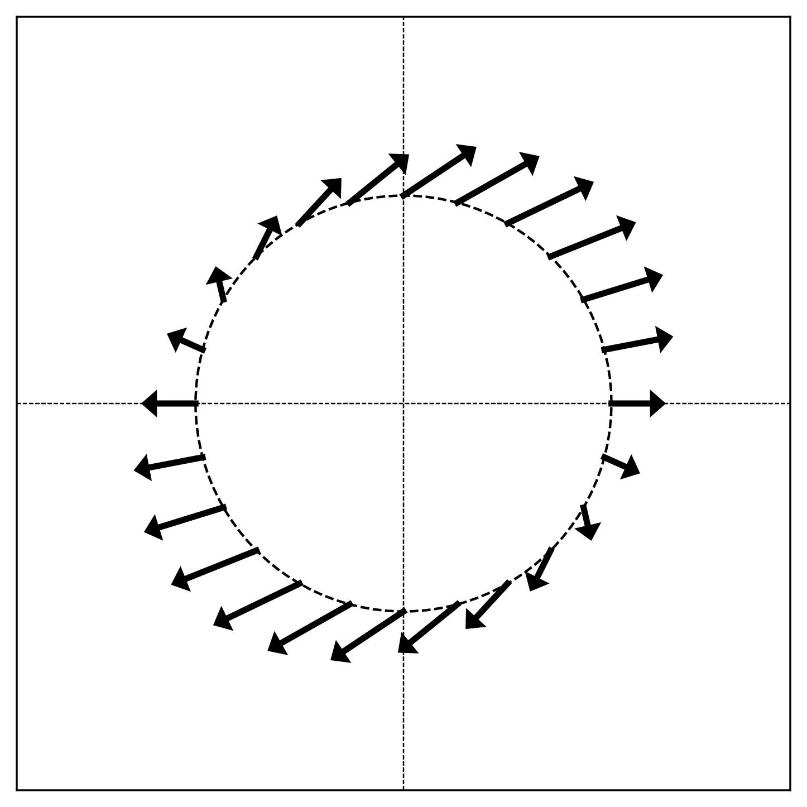
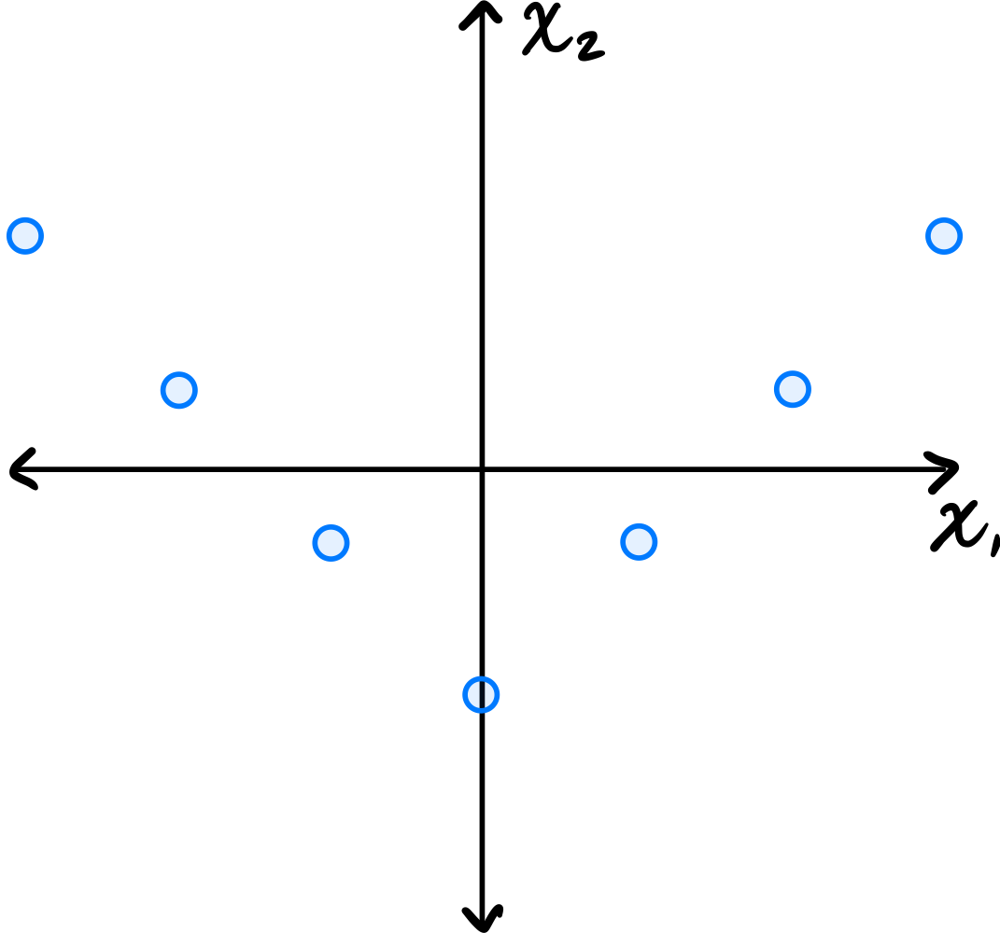
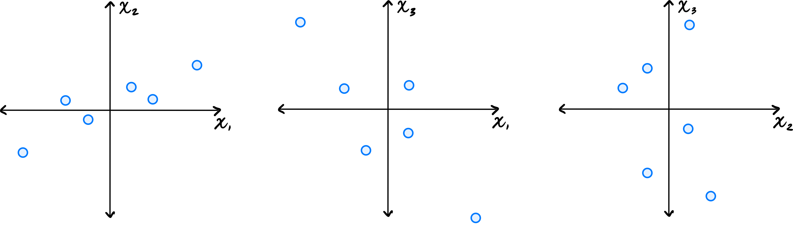
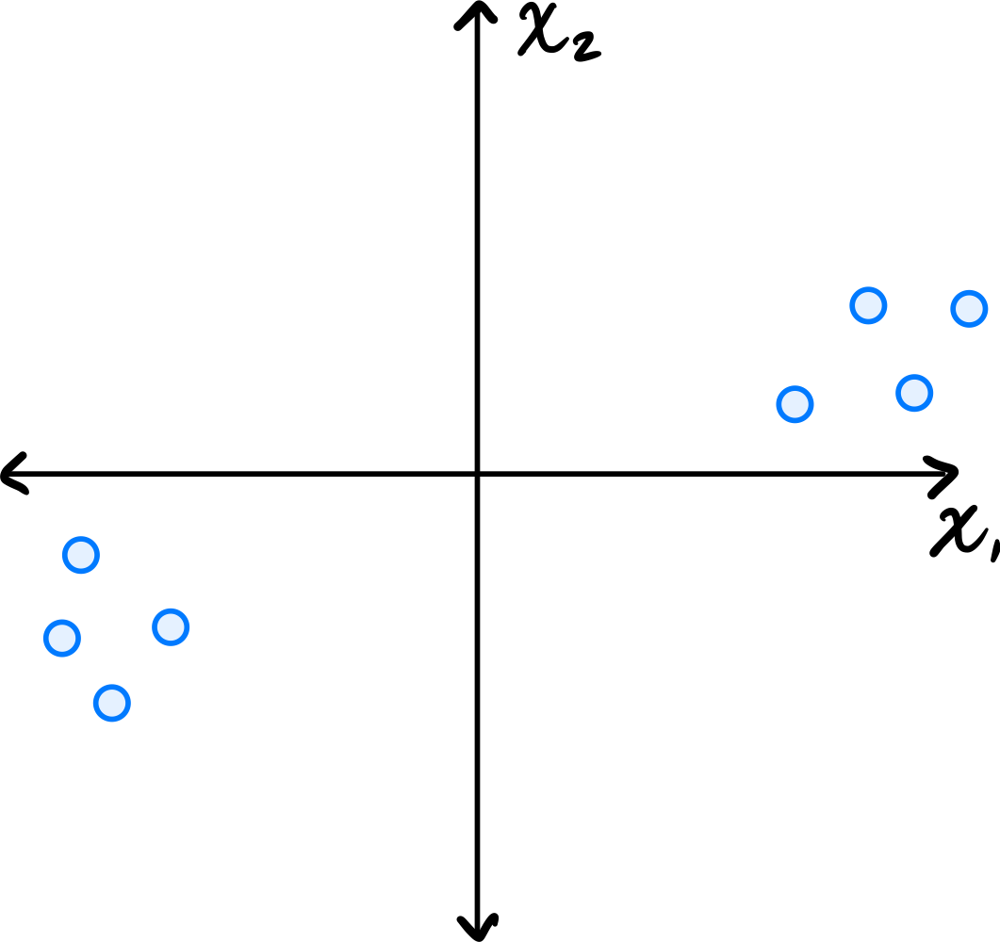
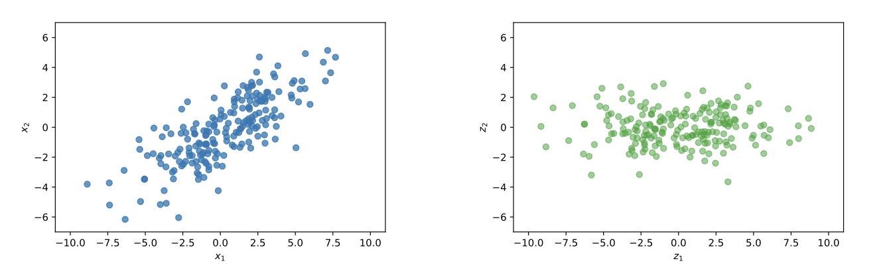
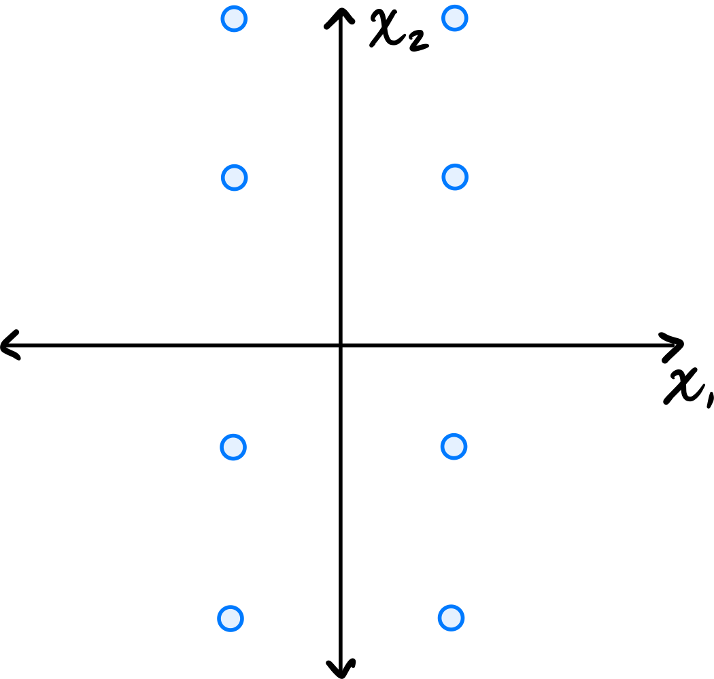
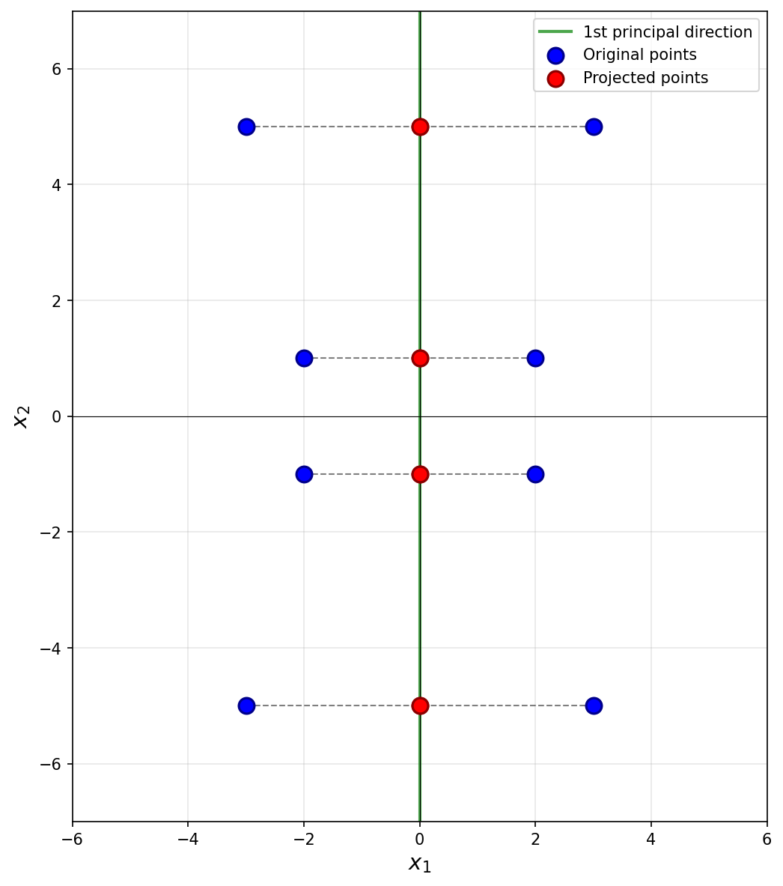
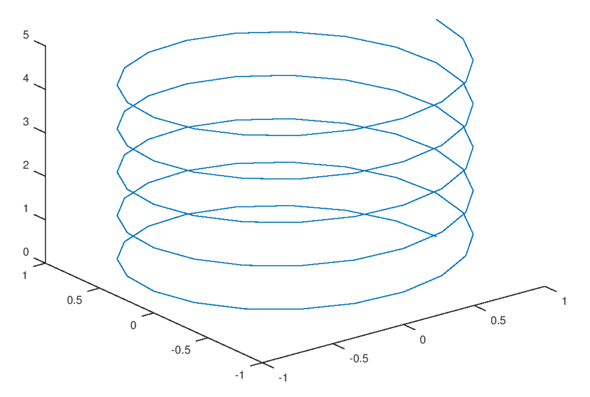
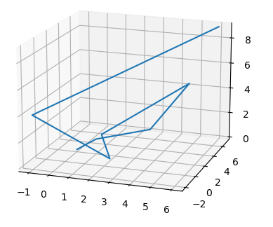

Midterm 01
Practice problems for topics on Midterm 01. See also the Sample Midterm 01 and its solutions.
Tags in this problem set:
Problem #001
Tags: linear algebra, lecture-02, quiz-02
Let \(\vec x = (1, -2, 5, 0, 3, -1, 4)^T \in\mathbb{R}^7\). What is \(\vec x \cdot\hat{e}^{(3)}\)?
Solution
5.
The "right" way to do this problem is not to calculate the entire dot product, but to recognize that The dot product \(\vec x \cdot\hat{e}^{(3)}\) extracts the third component of \(\vec x\)(which is 5).
Problem #002
Tags: linear algebra, lecture-02, quiz-02
Let \(\hat{u}^{(1)} = \frac{1}{\sqrt{2}}(1, 1)^T\) and \(\hat{u}^{(2)} = \frac{1}{\sqrt{2}}(-1, 1)^T\) form an orthonormal basis \(\mathcal{U}\) for \(\mathbb{R}^2\).
Given \(\vec x = (4, 2)^T\), compute \([\vec x]_{\mathcal{U}}\). That is, compute the coordinates of \(\vec x\) in the new basis.
Solution
\([\vec x]_{\mathcal{U}} = (3\sqrt{2}, -\sqrt{2})^T\).
To find the coordinates of \(\vec x\) in the basis \(\mathcal{U}\), we compute the dot product of \(\vec x\) with each basis vector:
Therefore, the coordinates of \(\vec x\) in the basis \(\mathcal{U}\) are:
Problem #003
Tags: linear algebra, lecture-02, quiz-02
Let \(\hat{u}^{(1)} = \frac{1}{\sqrt{3}}(1, 1, 1)^T\), \(\hat{u}^{(2)} = \frac{1}{\sqrt{2}}(1, -1, 0)^T\), and \(\hat{u}^{(3)} = \frac{1}{\sqrt{6}}(1, 1, -2)^T\) form an orthonormal basis \(\mathcal{U}\) for \(\mathbb{R}^3\).
Given \(\vec x = (3, 1, 2)^T\), compute \([\vec x]_{\mathcal{U}}\). That is, compute the coordinates of \(\vec x\) in the new basis.
Solution
\([\vec x]_{\mathcal{U}} = (2\sqrt{3}, \sqrt{2}, 0)^T\).
To find the coordinates of \(\vec x\) in the basis \(\mathcal{U}\), we compute the dot product of \(\vec x\) with each basis vector:
Therefore, the coordinates of \(\vec x\) in the basis \(\mathcal{U}\) are:
Problem #004
Tags: linear algebra, lecture-02, quiz-02
Let \(\hat{u}^{(1)} = \frac{1}{\sqrt{2}}(1, 0, 1)^T\), \(\hat{u}^{(2)} = (0, 1, 0)^T\), and \(\hat{u}^{(3)} = \frac{1}{\sqrt{2}}(1, 0, -1)^T\) form an orthonormal basis \(\mathcal{U}\) for \(\mathbb{R}^3\).
Given \(\vec x = (2, 3, 4)^T\), compute \([\vec x]_{\mathcal{U}}\). That is, compute the coordinates of \(\vec x\) in the new basis.
Solution
\([\vec x]_{\mathcal{U}} = (3\sqrt{2}, 3, -\sqrt{2})^T\).
To find the coordinates of \(\vec x\) in the basis \(\mathcal{U}\), we compute the dot product of \(\vec x\) with each basis vector:
Therefore, the coordinates of \(\vec x\) in the basis \(\mathcal{U}\) are:
Problem #005
Tags: linear algebra, lecture-02, quiz-02
Let \(\vec x = (2, -3)^T\) and let \(\mathcal{U} = \{\hat{u}^{(1)}, \hat{u}^{(2)}\}\) be an orthonormal basis for \(\mathbb{R}^2\). You are given the following information about the basis vectors:
Compute the coordinates of \(\vec x\) in the basis \(\mathcal{U}\), i.e., compute \([\vec x]_{\mathcal{U}}\).
Solution
\([\vec x]_{\mathcal{U}} = \left(-\frac{6}{5}, -\frac{17}{5}\right)^T\).
The coordinates of \(\vec x\) in basis \(\mathcal{U}\) are given by \([\vec x]_{\mathcal{U}} = (\vec x \cdot\hat{u}^{(1)}, \vec x \cdot\hat{u}^{(2)})^T\). We can compute each dot product using the given information:
Problem #006
Tags: linear algebra, lecture-02, quiz-02
Do the following three vectors form an orthonormal basis for \(\mathbb{R}^3\)? Justify your answer.
Solution
Nope, they don't. The problem is that the second and third vectors are not orthogonal. To be an orthonormal basis, all pairs of vectors must be orthogonal (dot product zero) and each vector must have unit length.
Problem #007
Tags: linear algebra, lecture-02, quiz-02
Do the following three vectors form an orthonormal basis for \(\mathbb{R}^3\)? Justify your answer.
Solution
Nope, they don't. While they are all orthogonal to each other, the second vector does not have unit length (its length is 2). To be an orthonormal basis, all vectors must have unit length.
Problem #008
Tags: linear algebra, lecture-02, quiz-02
Do the following three vectors form an orthonormal basis for \(\mathbb{R}^3\)? Justify your answer.
Solution
Yes.
You can check that all vectors have unit length, and that each pair of vectors is orthogonal (dot product zero).
Problem #009
Tags: lecture-02, linear transformations, quiz-02
Let \(\vec f(\vec x) = (2x_1 - x_2, \, x_1 + 3x_2)^T\). Is \(\vec f\) a linear transformation? Justify your answer.
Solution
Yes, \(\vec f\) is a linear transformation.
To verify linearity, we must show that for all vectors \(\vec x, \vec y\) and scalars \(\alpha, \beta\):
Let \(\vec x = (x_1, x_2)^T\) and \(\vec y = (y_1, y_2)^T\). Then:
Therefore, \(\vec f\) is linear.
Problem #010
Tags: lecture-02, linear transformations, quiz-02
Let \(\vec f(\vec x) = (x_1 x_2, \, x_2)^T\). Is \(\vec f\) a linear transformation? Justify your answer.
Solution
No, \(\vec f\) is not a linear transformation.
To show this, we find a counterexample. Consider \(\vec x = (1, 1)^T\) and \(\vec y = (1, 1)^T\), and let \(\alpha = \beta = 1\).
First, compute \(\vec f(\vec x + \vec y) = \vec f((2, 2)^T)\):
\(\vec f((2, 2)^T) = (2 \cdot 2, \, 2)^T = (4, 2)^T\) Now compute \(\vec f(\vec x) + \vec f(\vec y)\):
Since \((4, 2)^T \neq(2, 2)^T\), we have \(\vec f(\vec x + \vec y) \neq\vec f(\vec x) + \vec f(\vec y)\).
Therefore, \(\vec f\) is not linear. (The product \(x_1 x_2\) in the first component makes the function nonlinear.)
Problem #011
Tags: lecture-02, linear transformations, quiz-02
Let \(\vec f(\vec x) = (x_1^2, \, x_2)^T\). Is \(\vec f\) a linear transformation? Justify your answer.
Solution
No, \(\vec f\) is not a linear transformation.
A quick way to check: for any linear transformation, we must have \(\vec f(c\vec x) = c \vec f(\vec x)\) for any scalar \(c\).
Let us check the scaling property with \(\vec x = (1, 0)^T\) and \(c = 2\):
Since \((4, 0)^T \neq(2, 0)^T\), we have \(\vec f(2\vec x) \neq 2\vec f(\vec x)\).
Therefore, \(\vec f\) is not linear. (The squared term \(x_1^2\) makes the function nonlinear.)
Problem #012
Tags: lecture-02, linear transformations, quiz-02
Let \(\vec f(\vec x) = (-x_2, \, x_1)^T\). Is \(\vec f\) a linear transformation? Justify your answer.
Solution
Yes, \(\vec f\) is a linear transformation.
To verify linearity, we must show that for all vectors \(\vec x, \vec y\) and scalars \(\alpha, \beta\):
Let \(\vec x = (x_1, x_2)^T\) and \(\vec y = (y_1, y_2)^T\). Then:
Therefore, \(\vec f\) is linear.
By the way, this transformation does something interesting geometrically: it rotates vectors by \(90°\) counterclockwise.
Problem #013
Tags: lecture-02, linear transformations, quiz-02
Suppose \(\vec f\) is a linear transformation with:
Let \(\vec x = (2, 5)^T\). Compute \(\vec f(\vec x)\).
Solution
\(\vec f(\vec x) = (17, -1)^T\).
Since \(\vec f\) is linear, we can write:
Here, \(x_1 = 2\) and \(x_2 = 5\). Substituting the given values:
Problem #014
Tags: lecture-02, linear transformations, quiz-02
Suppose \(\vec f\) is a linear transformation with:
Let \(\vec x = (4, -2)^T\). Compute \(\vec f(\vec x)\).
Solution
\(\vec f(\vec x) = (-8, 10)^T\).
Since \(\vec f\) is linear, we can write:
Substituting the given values:
Problem #015
Tags: linear algebra, lecture-02, quiz-02
Recall that \(\vec x\) is a unit coordinate vector if the sum of the squares of its entries is 1. That is, if \(x_i\) is the \(i\)-th entry of \(\vec x\), then \(\vec x\) is a unit coordinate vector if \(\sum_i x_i^2 = 1\).
True or False: If \(\vec x\) is a unit coordinate vector when expressed in the standard basis, then \([\vec x]_{\mathcal{U}}\) is also a unit coordinate vector when expressed in an orthonormal basis \(\mathcal{U}\).
Solution
True.
The sum of squared entries of a vector is equal to the length of the vector squared. If we express \(\vec x\) in a different basis, we get different coordinates, but it doesn't change the length of the vector itself. So whatever those new coordinates are, their sum of squares must still equal 1.
Problem #016
Tags: linear algebra, lecture-02, quiz-02
True or False: If we express \(\vec x\) in an orthonormal basis \(\mathcal{U}\), the sum of the absolute values of the entries must stay the same. That is, \(\sum_i |x_i| = \sum_i |[\vec x]_{\mathcal{U},i}|\).
Solution
False.
The sum of absolute values (the \(\ell_1\) norm) is not preserved under a change of orthonormal basis. Only the sum of squares (the \(\ell_2\) norm squared) is preserved.
As a counterexample, consider \(\vec x = (1, 0)^T\) in \(\mathbb{R}^2\). The sum of absolute values is \(1\). Now consider the orthonormal basis \(\mathcal{U} = \{\frac{1}{\sqrt{2}}(1, 1)^T, \frac{1}{\sqrt{2}}(-1, 1)^T\}\). Then:
The sum of absolute values is now \(\frac{1}{\sqrt{2}} + \frac{1}{\sqrt{2}} = \sqrt{2}\neq 1\).
Problem #017
Tags: linear algebra, linear transformations, quiz-02, lecture-03
Let \(\vec f(\vec x) = (x_2, -x_1)^T\) be a linear transformation, and let \(\mathcal{U} = \{\hat{u}^{(1)}, \hat{u}^{(2)}\}\) be an orthonormal basis for \(\mathbb{R}^2\) with:
Express the transformation \(\vec f\) in the basis \(\mathcal{U}\). That is, if \([\vec x]_{\mathcal{U}} = (z_1, z_2)^T\), find \([\vec f(\vec x)]_{\mathcal{U}}\) in terms of \(z_1\) and \(z_2\).
Solution
\([\vec f(\vec x)]_{\mathcal{U}} = (z_2, -z_1)^T \).
To express \(\vec f\) in the basis \(\mathcal{U}\), we first need to find what \(\vec f\) does to the basis vectors \(\hat{u}^{(1)}\) and \(\hat{u}^{(2)}\), then express the results in the \(\mathcal{U}\) basis.
To start, we compute \(\vec f(\hat{u}^{(1)})\) and \(\vec f(\hat{u}^{(2)})\).
However, notice that this is \(\vec f(\hat{u}^{(1)})\) and \(\vec f(\hat{u}^{(2)})\) expressed in the standard basis. Therefore, we need to do a change of basis to express these vectors in the \(\mathcal{U}\) basis. We do the change of basis just like we would for any vector: by dotting with each basis vector. That is:
We need to calculate all of these dot products:
Therefore, we have:
Finally, since \(\vec f\) is linear, we can express \(\vec f(\vec x)\) in the \(\mathcal{U}\) basis as:
Problem #018
Tags: linear algebra, linear transformations, quiz-02, lecture-03
Let \(\vec f(\vec x) = (x_1, -x_2, x_3)^T\) be a linear transformation, and let \(\mathcal{U} = \{\hat{u}^{(1)}, \hat{u}^{(2)}, \hat{u}^{(3)}\}\) be an orthonormal basis for \(\mathbb{R}^3\) with:
Express the transformation \(\vec f\) in the basis \(\mathcal{U}\). That is, if \([\vec x]_{\mathcal{U}} = (z_1, z_2, z_3)^T\), find \([\vec f(\vec x)]_{\mathcal{U}}\) in terms of \(z_1\), \(z_2\), and \(z_3\).
Solution
\([\vec f(\vec x)]_{\mathcal{U}} = (-z_2, -z_1, z_3)^T \).
To express \(\vec f\) in the basis \(\mathcal{U}\), we first need to find what \(\vec f\) does to the basis vectors \(\hat{u}^{(1)}\), \(\hat{u}^{(2)}\), and \(\hat{u}^{(3)}\), then express the results in the \(\mathcal{U}\) basis.
To start, we compute \(\vec f(\hat{u}^{(1)})\), \(\vec f(\hat{u}^{(2)})\), and \(\vec f(\hat{u}^{(3)})\).
However, notice that these are expressed in the standard basis. Therefore, we need to do a change of basis to express these vectors in the \(\mathcal{U}\) basis. We do the change of basis just like we would for any vector: by dotting with each basis vector. That is:
We calculate the dot products for \(\vec f(\hat{u}^{(1)})\):
We calculate the dot products for \(\vec f(\hat{u}^{(2)})\):
For \(\vec f(\hat{u}^{(3)})\), we note that \(\vec f(\hat{u}^{(3)}) = (0, 0, 1)^T = \hat{u}^{(3)}\), so:
Therefore, we have:
Finally, since \(\vec f\) is linear, we can express \(\vec f(\vec x)\) in the \(\mathcal{U}\) basis as:
Problem #019
Tags: linear algebra, linear transformations, quiz-02, lecture-03
Let \(\vec f(\vec x) = (x_2, x_1)^T\) be a linear transformation, and let \(\mathcal{U} = \{\hat{u}^{(1)}, \hat{u}^{(2)}\}\) be an orthonormal basis for \(\mathbb{R}^2\) with:
Express the transformation \(\vec f\) in the basis \(\mathcal{U}\). That is, if \([\vec x]_{\mathcal{U}} = (z_1, z_2)^T\), find \([\vec f(\vec x)]_{\mathcal{U}}\) in terms of \(z_1\) and \(z_2\).
Solution
\([\vec f(\vec x)]_{\mathcal{U}} = (z_1, -z_2)^T \).
To express \(\vec f\) in the basis \(\mathcal{U}\), we first compute what \(\vec f\) does to the basis vectors \(\hat{u}^{(1)}\) and \(\hat{u}^{(2)}\).
Now, these results are expressed in the standard basis, and we need to convert them to the \(\mathcal{U}\) basis. In principle, we could do this by dotting with each basis vector, but we can also notice that:
This means we can immediately write:
Finally, since \(\vec f\) is linear:
Problem #020
Tags: linear algebra, linear transformations, quiz-02, lecture-03
Suppose \(\vec f\) is a linear transformation with:
Write the matrix \(A\) that represents \(\vec f\) with respect to the standard basis.
Solution
To make the matrix representing the linear transformation \(\vec f\) with respect to the standard basis, we simply place \(f(\hat{e}^{(1)})\) and \(\vec f(\hat{e}^{(2)})\) as the first and second columns of the matrix, respectively. That is:
Problem #021
Tags: linear algebra, linear transformations, quiz-02, lecture-03
Suppose \(\vec f\) is a linear transformation with:
Write the matrix \(A\) that represents \(\vec f\) with respect to the standard basis.
Solution
To make the matrix representing the linear transformation \(\vec f\) with respect to the standard basis, we simply place \(\vec f(\hat{e}^{(1)})\), \(\vec f(\hat{e}^{(2)})\), and \(\vec f(\hat{e}^{(3)})\) as the columns of the matrix. That is:
Problem #022
Tags: linear algebra, linear transformations, quiz-02, lecture-03
Consider the linear transformation \(\vec f : \mathbb{R}^3 \to\mathbb{R}^3\) that takes in a vector \(\vec x\) and simply outputs that same vector. That is, \(\vec f(\vec x) = \vec x\) for all \(\vec x\).
What is the matrix \(A\) that represents \(\vec f\) with respect to the standard basis?
Solution
You probably could have written down the answer immediately, since this is a very well-known transformation called the identity transformation and the matrix is the identity matrix. But here's why the identity matrix is what it is:
To find the matrix, we need to determine what \(\vec f\) does to each basis vector:
Placing these as columns:
That is the identity matrix we were expecting.
Problem #023
Tags: linear algebra, linear transformations, quiz-02, lecture-03
Suppose \(\vec f\) is represented by the following matrix:
Let \(\vec x = (5, 2)^T\). What is \(\vec f(\vec x)\)?
Solution
\(\vec f(\vec x) = (8, 23)^T\).
Since the matrix \(A\) represents \(\vec f\), we have \(\vec f(\vec x) = A \vec x\). We compute:
Problem #024
Tags: linear algebra, linear transformations, quiz-02, lecture-03
Suppose \(\vec f\) is represented by the following matrix:
Let \(\vec x = (2, 1, -1)^T\). What is \(\vec f(\vec x)\)?
Solution
\(\vec f(\vec x) = (4, -2, 3)^T\).
Since the matrix \(A\) represents \(\vec f\), we have \(\vec f(\vec x) = A \vec x\). We compute:
Problem #025
Tags: linear algebra, linear transformations, quiz-02, lecture-03
Consider the linear transformation \(\vec f : \mathbb{R}^2 \to\mathbb{R}^2\) that rotates vectors by \(90^\circ\) clockwise.
Let \(\mathcal{U} = \{\hat{u}^{(1)}, \hat{u}^{(2)}\}\) be an orthonormal basis with:
What is the matrix \(A\) that represents \(\vec f\) with respect to the basis \(\mathcal{U}\)?
Solution
Remember that the columns of this matrix are:
So we need to compute \(\vec f(\hat{u}^{(1)})\) and \(\vec f(\hat{u}^{(2)})\), then express those results in the \(\mathcal{U}\) basis.
Let's start with \(\vec f(\hat{u}^{(1)})\). \(\vec f\) takes the vector \(\hat{u}^{(1)} = \frac{1}{\sqrt{2}}(1, 1)^T\), which points up and to the right at a \(45^\circ\) angle, and rotates it \(90^\circ\) clockwise, resulting in the vector \(\frac{1}{\sqrt{2}}(1, -1)^T = \hat{u}^{(2)}\)(that is, the unit vector pointing down and to the right at a \(45^\circ\) angle). As it so happens, this is exactly the second basis vector. That is, \(\vec f(\hat{u}^{(1)}) = \hat{u}^{(2)}\).
Now for \(\vec f(\hat{u}^{(2)})\). \(\vec f\) takes the vector \(\hat{u}^{(2)} = \frac{1}{\sqrt{2}}(1, -1)^T\), which points down and to the right at a \(45^\circ\) angle, and rotates it \(90^\circ\) clockwise, resulting in the vector \(\frac{1}{\sqrt{2}}(-1, -1)^T\). This isn't \(\vec f(\hat{u}^{(1)})\), exactly, but it is \(-1\) times \(\hat{u}^{(1)}\). That is, \(\vec f(\hat{u}^{(2)}) = -\hat{u}^{(1)}\).
What we have found is:
Therefore, the matrix is:
Problem #026
Tags: linear algebra, linear transformations, quiz-02, lecture-03
Consider the linear transformation \(\vec f : \mathbb{R}^2 \to\mathbb{R}^2\) that reflects vectors over the \(x\)-axis.
Let \(\mathcal{U} = \{\hat{u}^{(1)}, \hat{u}^{(2)}\}\) be an orthonormal basis with:
What is the matrix \(A\) that represents \(\vec f\) with respect to the basis \(\mathcal{U}\)?
Solution
Remember that the columns of this matrix are:
So we need to compute \(\vec f(\hat{u}^{(1)})\) and \(\vec f(\hat{u}^{(2)})\), then express those results in the \(\mathcal{U}\) basis.
Let's start with \(\vec f(\hat{u}^{(1)})\). \(\vec f\) takes the vector \(\hat{u}^{(1)} = \frac{1}{\sqrt{2}}(1, 1)^T\), which points up and to the right at a \(45^\circ\) angle, and reflects it over the \(x\)-axis, resulting in the vector \(\frac{1}{\sqrt{2}}(1, -1)^T = \hat{u}^{(2)}\)(the unit vector pointing down and to the right at a \(45^\circ\) angle). That is, \(\vec f(\hat{u}^{(1)}) = \hat{u}^{(2)}\).
Now for \(\vec f(\hat{u}^{(2)})\). \(\vec f\) takes the vector \(\hat{u}^{(2)} = \frac{1}{\sqrt{2}}(1, -1)^T\), which points down and to the right at a \(45^\circ\) angle, and reflects it over the \(x\)-axis, resulting in the vector \(\frac{1}{\sqrt{2}}(1, 1)^T = \hat{u}^{(1)}\). That is, \(\vec f(\hat{u}^{(2)}) = \hat{u}^{(1)}\).
What we have found is:
Therefore, the matrix is:
Problem #027
Tags: linear algebra, lecture-02, quiz-02
Let \(\hat{u}^{(1)} = \frac{1}{\sqrt{2}}(1, 1)^T\) and \(\hat{u}^{(2)} = \frac{1}{\sqrt{2}}(1, -1)^T\) form an orthonormal basis \(\mathcal{U}\) for \(\mathbb{R}^2\).
Suppose \([\vec x]_{\mathcal{U}} = (\sqrt{2}, 3\sqrt{2})^T\). That is, the coordinates of \(\vec x\) in the basis \(\mathcal{U}\) are \((\sqrt{2}, 3\sqrt{2})^T\).
What is \(\vec x\) in the standard basis?
Solution
\(\vec x = (4, -2)^T\).
To convert from basis \(\mathcal{U}\) to the standard basis, we compute the linear combination of basis vectors:
Problem #028
Tags: linear algebra, quiz-03, eigenvalues, eigenvectors, lecture-04
Let \(A = \begin{pmatrix} 3 & 1 \\ 1 & 3 \end{pmatrix}\) and let \(\vec v = (1, 1)^T\).
True or False: \(\vec v\) is an eigenvector of \(A\). If true, what is the corresponding eigenvalue?
Solution
True, with eigenvalue \(\lambda = 4\).
We compute:
Since \(A \vec v = 4 \vec v\), the vector \(\vec v\) is an eigenvector with eigenvalue \(4\).
Problem #029
Tags: linear algebra, quiz-03, eigenvalues, eigenvectors, lecture-04
Let \(A = \begin{pmatrix} 2 & 1 \\ 1 & 2 \end{pmatrix}\) and let \(\vec v = (1, 2)^T\).
True or False: \(\vec v\) is an eigenvector of \(A\). If true, what is the corresponding eigenvalue?
Solution
False.
We compute:
For \(\vec v\) to be an eigenvector, we would need \(A \vec v = \lambda\vec v\) for some scalar \(\lambda\). This would require:
From the first component, we would need \(\lambda = 4\). From the second component, we would need \(\lambda = \frac{5}{2}\). Since these two values are not equal, there is no such \(\lambda\) that satisfies both equations. Therefore, \(\vec v\) is not an eigenvector of \(A\).
Problem #030
Tags: linear algebra, quiz-03, eigenvalues, eigenvectors, lecture-04
Let \(A = \begin{pmatrix} 1 & 1 & 3 \\ 1 & 2 & 1 \\ 3 & 1 & 9 \end{pmatrix}\) and let \(\vec v = (1, 4, -1)^T\).
True or False: \(\vec v\) is an eigenvector of \(A\). If true, what is the corresponding eigenvalue?
Solution
True, with eigenvalue \(\lambda = 2\).
We compute:
Since \(A \vec v = 2 \vec v\), the vector \(\vec v\) is an eigenvector with eigenvalue \(2\).
Problem #031
Tags: linear algebra, quiz-03, eigenvalues, eigenvectors, lecture-04
Let \(A = \begin{pmatrix} 5 & 1 & 1 & 1 \\ 1 & 5 & 1 & 1 \\ 1 & 1 & 5 & 1 \\ 1 & 1 & 1 & 5 \end{pmatrix}\) and let \(\vec v = (1, 2, -2, -1)^T\).
True or False: \(\vec v\) is an eigenvector of \(A\). If true, what is the corresponding eigenvalue?
Solution
True, with eigenvalue \(\lambda = 4\).
We compute:
Since \(A \vec v = 4 \vec v\), the vector \(\vec v\) is an eigenvector with eigenvalue \(4\).
Problem #032
Tags: linear algebra, quiz-03, eigenvalues, eigenvectors, lecture-04
Let \(A = \begin{pmatrix} 1 & 6 \\ 6 & 6 \end{pmatrix}\) and let \(\vec v = (3, -2)^T\).
True or False: \(\vec v\) is an eigenvector of \(A\). If true, what is the corresponding eigenvalue?
Solution
True, with eigenvalue \(\lambda = -3\).
We compute:
Since \(A \vec v = -3 \vec v\), the vector \(\vec v\) is an eigenvector with eigenvalue \(-3\).
Problem #033
Tags: linear algebra, quiz-03, eigenvalues, eigenvectors, lecture-04
Let \(\vec v\) be a unit vector in \(\mathbb R^d\), and let \(I\) be the \(d \times d\) identity matrix. Consider the matrix \(P\) defined as:
True or False: \(\vec v\) is an eigenvector of \(P\).
Solution
True.
To verify this, we compute \(P \vec v\):
Since \(P \vec v = -\vec v = (-1) \vec v\), we see that \(\vec v\) is an eigenvector of \(P\) with eigenvalue \(-1\).
Note: The matrix \(P = I - 2 \vec v \vec v^T\) is called a Householder reflection matrix, which reflects vectors across the hyperplane orthogonal to \(\vec v\).
Problem #034
Tags: linear algebra, quiz-03, eigenvalues, eigenvectors, lecture-04
Let \(A\) be the matrix:
It can be verified that the vector \(\vec{u}^{(1)} = (2, 1)^T\) is an eigenvector of \(A\).
Part 1)
What is the eigenvalue associated with \(\vec{u}^{(1)}\)?
Solution
The eigenvalue is \(\lambda_1 = 6\).
To find the eigenvalue, we compute \(A \vec{u}^{(1)}\):
Therefore, \(\lambda_1 = 6\).
Part 2)
Find another eigenvector \(\vec{u}^{(2)}\) of \(A\). Your eigenvector should have an eigenvalue that is different from \(\vec{u}^{(1)}\)'s eigenvalue. It does not need to be normalized.
Solution
\(\vec{u}^{(2)} = (1, -2)^T\)(or any scalar multiple).
Since \(A\) is symmetric, we know that we can always find two orthogonal eigenvectors. This suggests that we should find a vector orthogonal to \(\vec{u}^{(1)} = (2, 1)^T\) and make sure that it is indeed an eigenvector.
We know from the math review in Week 01 that the vector \((1, -2)^T\) is orthogonal to \((2, 1)^T\)(in general, \((a, b)^T\) is orthogonal to \((-b, a)^T\)).
We can verify:
So the eigenvalue is \(\lambda_2 = 1\), which is indeed different from \(\lambda_1 = 6\).
Problem #035
Tags: linear algebra, quiz-03, eigenvalues, eigenvectors, lecture-04
Let \(D\) be the diagonal matrix:
Part 1)
What is the top eigenvalue of \(D\)? What eigenvector corresponds to this eigenvalue?
Solution
The top eigenvalue is \(7\).
For a diagonal matrix, the eigenvalues are exactly the diagonal entries. The diagonal entries are \(2, -5, 7\), and the largest is \(7\).
An eigenvector corresponding to this eigenvalue is \(\vec v = (0, 0, 1)^T\).
Part 2)
What is the bottom (smallest) eigenvalue of \(D\)? What eigenvector corresponds to this eigenvalue?
Solution
The bottom eigenvalue is \(-5\).
An eigenvector corresponding to this eigenvalue is \(\vec w = (0, 1, 0)^T\).
Problem #036
Tags: linear algebra, quiz-03, eigenvalues, eigenvectors, lecture-04, linear transformations
Consider the linear transformation \(\vec f : \mathbb{R}^2 \to\mathbb{R}^2\) that reflects vectors over the line \(y = -x\).
Find two orthogonal eigenvectors of this transformation and their corresponding eigenvalues.
Solution
The eigenvectors are \((1, -1)^T\) with \(\lambda = 1\), and \((1, 1)^T\) with \(\lambda = -1\).
Geometrically, vectors along the line \(y = -x\)(i.e., multiples of \((1, -1)^T\)) are unchanged by reflection over that line, so they have eigenvalue \(1\). Vectors perpendicular to the line \(y = -x\)(i.e., multiples of \((1, 1)^T\)) are flipped to point in the opposite direction, so they have eigenvalue \(-1\).
Problem #037
Tags: linear algebra, quiz-03, eigenvalues, eigenvectors, lecture-04, linear transformations
Consider the linear transformation \(\vec f : \mathbb{R}^2 \to\mathbb{R}^2\) that scales vectors along the line \(y = x\) by a factor of 2, and scales vectors along the line \(y = -x\) by a factor of 3.
Find two orthogonal eigenvectors of this transformation and their corresponding eigenvalues.
Solution
The eigenvectors are \((1, 1)^T\) with \(\lambda = 2\), and \((1, -1)^T\) with \(\lambda = 3\).
Geometrically, vectors along the line \(y = x\)(i.e., multiples of \((1, 1)^T\)) are scaled by a factor of 2, so they have eigenvalue \(2\). Vectors along the line \(y = -x\)(i.e., multiples of \((1, -1)^T\)) are scaled by a factor of 3, so they have eigenvalue \(3\).
Problem #038
Tags: linear algebra, quiz-03, eigenvalues, eigenvectors, lecture-04, linear transformations
Consider the linear transformation \(\vec f : \mathbb{R}^2 \to\mathbb{R}^2\) that rotates vectors by \(180°\).
Find two orthogonal eigenvectors of this transformation and their corresponding eigenvalues.
Solution
Any pair of orthogonal vectors works, such as \((1, 0)^T\) and \((0, 1)^T\). Both have eigenvalue \(\lambda = -1\).
Geometrically, rotating any vector by \(180°\) reverses its direction, so \(\vec f(\vec v) = -\vec v\) for all \(\vec v\). This means every nonzero vector is an eigenvector with eigenvalue \(-1\).
Since we need two orthogonal eigenvectors, any orthogonal pair will do.
Problem #039
Tags: linear algebra, quiz-03, eigenvalues, eigenvectors, lecture-04
Consider the diagonal matrix:
How many unit length eigenvectors does \(A\) have?
Solution
\(\infty\) The upper-left \(2 \times 2\) block of \(A\) is the identity matrix. Recall from lecture that the identity matrix has infinitely many eigenvectors: every nonzero vector is an eigenvector of the identity with eigenvalue 1.
Similarly, any vector of the form \((a, b, 0)^T\) where \(a\) and \(b\) are not both zero satisfies:
So any such vector is an eigenvector with eigenvalue 1. There are infinitely many unit vectors of this form (they form a circle in the \(x\)-\(y\) plane), so \(A\) has infinitely many unit length eigenvectors.
Additionally, \((0, 0, 1)^T\) is an eigenvector with eigenvalue 5.
Problem #040
Tags: linear algebra, quiz-03, spectral theorem, eigenvectors, lecture-04
Consider the matrix:
True or False: The spectral theorem guarantees that \(A\) has 2 orthogonal eigenvectors.
Solution
False.
The spectral theorem only applies to symmetric matrices. The matrix \(A\) is not symmetric because \(A^T \neq A\):
Since \(A\) is not symmetric, the spectral theorem does not apply, and we cannot use it to conclude anything about \(A\)'s eigenvectors.
Problem #041
Tags: linear algebra, quiz-03, spectral theorem, eigenvectors, lecture-04
Suppose \(A\) is a symmetric matrix, and \(\vec{u}^{(1)}\) and \(\vec{u}^{(2)}\) are both eigenvectors of \(A\).
True or False: \(\vec{u}^{(1)}\) and \(\vec{u}^{(2)}\) must be orthogonal.
Solution
False.
Consider the identity matrix \(I\). Every nonzero vector is an eigenvector of \(I\) with eigenvalue 1. For example, both \((1, 0)^T\) and \((1, 1)^T\) are eigenvectors of \(I\), but they are not orthogonal:
The spectral theorem says that you can find\(n\) orthogonal eigenvectors for an \(n \times n\) symmetric matrix, but it does not say that every pair of eigenvectors is orthogonal.
Aside: It can be shown that if \(\vec{u}^{(1)}\) and \(\vec{u}^{(2)}\) have different eigenvalues, then they must be orthogonal.
Problem #042
Tags: linear algebra, quiz-03, spectral theorem, eigenvectors, diagonalization, lecture-04
Suppose \(A\) is a \(d \times d\) symmetric matrix.
True or False: There exists an orthonormal basis in which \(A\) is diagonal.
Solution
True.
By the spectral theorem, every \(d \times d\) symmetric matrix has \(d\) mutually orthogonal eigenvectors. If we normalize these eigenvectors, they form an orthonormal basis.
In this eigenbasis, the matrix \(A\) is diagonal: the diagonal entries are the eigenvalues of \(A\).
Problem #043
Tags: linear algebra, quiz-03, symmetric matrices, eigenvectors, lecture-04, linear transformations
The figure below shows a linear transformation \(\vec{f}\) applied to points on the unit circle. Each arrow shows the direction and relative magnitude of \(\vec{f}(\vec{x})\) for a point \(\vec{x}\) on the circle.

True or False: The linear transformation \(\vec{f}\) is symmetric.
Solution
False.
Recall from lecture that symmetric linear transformations have orthogonal axes of symmetry. In the visualization, this would appear as two perpendicular directions where the arrows point directly outward (or inward) from the circle.
In this figure, there are no such orthogonal axes of symmetry. The pattern of arrows does not exhibit the characteristic symmetry of a symmetric transformation.
Problem #044
Tags: linear algebra, quiz-03, diagonal matrices, eigenvectors, lecture-04, linear transformations
The figure below shows a linear transformation \(\vec{f}\) applied to points on the unit circle. Each arrow shows the direction and relative magnitude of \(\vec{f}(\vec{x})\) for a point \(\vec{x}\) on the circle.
True or False: The matrix representing \(\vec{f}\) with respect to the standard basis is diagonal.
Solution
True.
A matrix is diagonal if and only if the standard basis vectors are eigenvectors. In the visualization, eigenvectors correspond to directions where the arrows point radially (directly outward or inward).
Looking at the figure, the arrows at \((1, 0)\) and \((-1, 0)\) point horizontally, and the arrows at \((0, 1)\) and \((0, -1)\) point vertically. This means the standard basis vectors \(\hat e^{(1)} = (1, 0)^T\) and \(\hat e^{(2)} = (0, 1)^T\) are eigenvectors.
Since the standard basis vectors are eigenvectors, the matrix is diagonal in the standard basis.
Problem #045
Tags: linear algebra, eigenbasis, quiz-03, eigenvalues, eigenvectors, lecture-04
Let \(\vec{u}^{(1)}, \vec{u}^{(2)}, \vec{u}^{(3)}\) be three unit length orthonormal eigenvectors of a linear transformation \(\vec{f}\), with eigenvalues \(8\), \(4\), and \(-3\) respectively.
Suppose a vector \(\vec{x}\) can be written as:
What is \(\vec{f}(\vec{x})\), expressed in coordinates with respect to the eigenbasis \(\{\vec{u}^{(1)}, \vec{u}^{(2)}, \vec{u}^{(3)}\}\)?
Solution
\([\vec{f}(\vec{x})]_{\mathcal{U}} = (16, -12, -3)^T\) Using linearity and the eigenvector property:
Since \(\vec{u}^{(1)}\) is an eigenvector with eigenvalue \(8\), we have \(\vec{f}(\vec{u}^{(1)}) = 8\vec{u}^{(1)}\). Similarly, \(\vec{f}(\vec{u}^{(2)}) = 4\vec{u}^{(2)}\) and \(\vec{f}(\vec{u}^{(3)}) = -3\vec{u}^{(3)}\):
In the eigenbasis, this is simply \((16, -12, -3)^T\).
Problem #046
Tags: linear algebra, eigenbasis, quiz-03, eigenvalues, eigenvectors, lecture-04
Let \(\vec{u}^{(1)}, \vec{u}^{(2)}, \vec{u}^{(3)}\) be three unit length orthonormal eigenvectors of a linear transformation \(\vec{f}\), with eigenvalues \(5\), \(-2\), and \(3\) respectively.
Suppose a vector \(\vec{x}\) can be written as:
What is \(\vec{f}(\vec{x})\), expressed in coordinates with respect to the eigenbasis \(\{\vec{u}^{(1)}, \vec{u}^{(2)}, \vec{u}^{(3)}\}\)?
Solution
\([\vec{f}(\vec{x})]_{\mathcal{U}} = (20, -2, -6)^T\) Using linearity and the eigenvector property:
Since \(\vec{u}^{(1)}\) is an eigenvector with eigenvalue \(5\), we have \(\vec{f}(\vec{u}^{(1)}) = 5\vec{u}^{(1)}\). Similarly, \(\vec{f}(\vec{u}^{(2)}) = -2\vec{u}^{(2)}\) and \(\vec{f}(\vec{u}^{(3)}) = 3\vec{u}^{(3)}\):
In the eigenbasis, this is simply \((20, -2, -6)^T\).
Problem #047
Tags: optimization, linear algebra, quiz-03, eigenvalues, eigenvectors, lecture-04
Let \(A\) be a symmetric matrix with eigenvalues \(6\) and \(-9\).
True or False: The maximum value of \(\|A\vec{x}\|\) over all unit vectors \(\vec{x}\) is \(6\).
Solution
False. The maximum is \(9\).
The maximum of \(\|A\vec{x}\|\) over unit vectors is achieved when \(\vec{x}\) is an eigenvector corresponding to the eigenvalue with the largest absolute value.
Here, \(|-9| = 9 > 6 = |6|\), so the maximum is achieved at the eigenvector with eigenvalue \(-9\).
If \(\vec{u}\) is a unit eigenvector with eigenvalue \(-9\), then:
Problem #048
Tags: optimization, linear algebra, quiz-03, eigenvalues, eigenvectors, quadratic forms, lecture-04
Let \(A\) be a \(3 \times 3\) symmetric matrix with the following eigenvectors and corresponding eigenvalues: \(\vec{u}^{(1)} = \frac{1}{3}(1, 2, 2)^T\) has eigenvalue \(4\), \(\vec{u}^{(2)} = \frac{1}{3}(2, 1, -2)^T\) has eigenvalue \(1\), and \(\vec{u}^{(3)} = \frac{1}{3}(2, -2, 1)^T\) has eigenvalue \(-10\).
Consider the quadratic form \(\vec{x}\cdot A\vec{x}\).
Part 1)
What unit vector \(\vec{x}\) maximizes \(\vec{x}\cdot A\vec{x}\)?
Solution
\(\vec{u}^{(1)} = \frac{1}{3}(1, 2, 2)^T\) The quadratic form \(\vec{x}\cdot A\vec{x}\) is maximized by the eigenvector with the largest eigenvalue. Among \(4\), \(1\), and \(-10\), the largest is \(4\), so the maximizer is \(\vec{u}^{(1)}\).
Part 2)
What is the maximum value of \(\vec{x}\cdot A\vec{x}\) over all unit vectors?
Solution
\(4\) The maximum value equals the largest eigenvalue. We can verify:
Part 3)
What unit vector \(\vec{x}\) minimizes \(\vec{x}\cdot A\vec{x}\)?
Solution
\(\vec{u}^{(3)} = \frac{1}{3}(2, -2, 1)^T\) The quadratic form is minimized by the eigenvector with the smallest eigenvalue. Among \(4\), \(1\), and \(-10\), the smallest is \(-10\), so the minimizer is \(\vec{u}^{(3)}\).
Part 4)
What is the minimum value of \(\vec{x}\cdot A\vec{x}\) over all unit vectors?
Solution
\(-10\) The minimum value equals the smallest eigenvalue. We can verify:
Problem #049
Tags: linear algebra, quiz-03, eigenvalues, eigenvectors, lecture-04
Let \(A\) be a symmetric matrix with top eigenvalue \(\lambda\). Let \(B = A + 5I\), where \(I\) is the identity matrix.
True or False: The top eigenvalue of \(B\) must be \(\lambda + 5\).
Solution
True.
The main thing to realize is that \(A\) and \(B\) have the same eigenvectors. If \(\vec v\) is an eigenvector of \(A\) with eigenvalue \(\lambda\), then:
Thus, \(\vec v\) is also an eigenvector of \(B\) with eigenvalue \(\lambda + 5\).
This means that the eigenvalues of \(B\) are simply the eigenvalues of \(A\) shifted by 5. Therefore, if \(\lambda\) is the top eigenvalue of \(A\), then \(\lambda + 5\) is the top eigenvalue of \(B\).
Problem #050
Tags: orthogonal matrices, linear algebra, quiz-03, change of basis, lecture-05
Let \(\hat{u}^{(1)}\) and \(\hat{u}^{(2)}\) be an orthonormal basis for \(\mathbb R^2\):
Part 1)
What is the change of basis matrix \(U\)?
Solution
The change of basis matrix \(U\) has the new basis vectors as its rows:
This matrix represents a 45-degree rotation.
Part 2)
Let \(\vec x = (2, 0)^T\) be a vector in the standard basis. What are the coordinates of \(\vec x\) in the basis \(\mathcal{U}\)?
Solution
We compute \([\vec x]_{\mathcal{U}} = U \vec x\):
Problem #051
Tags: orthogonal matrices, linear algebra, quiz-03, change of basis, lecture-05
Let \(\hat{u}^{(1)}\), \(\hat{u}^{(2)}\), and \(\hat{u}^{(3)}\) be an orthonormal basis for \(\mathbb R^3\):
Part 1)
What is the change of basis matrix \(U\)?
Solution
The change of basis matrix \(U\) has the new basis vectors as its rows:
This matrix represents a 30-degree rotation in the \(xy\)-plane while leaving the \(z\)-axis unchanged.
Part 2)
Let \(\vec x = (\sqrt 3, 1, 2)^T\) be a vector in the standard basis. What are the coordinates of \(\vec x\) in the basis \(\mathcal{U}\)?
Solution
We compute \([\vec x]_{\mathcal{U}} = U \vec x\):
Problem #052
Tags: orthogonal matrices, linear algebra, quiz-03, change of basis, lecture-05
Let \(\hat{u}^{(1)}\), \(\hat{u}^{(2)}\), \(\hat{u}^{(3)}\), and \(\hat{u}^{(4)}\) be an orthonormal basis for \(\mathbb R^4\):
Part 1)
What is the change of basis matrix \(U\)?
Solution
The change of basis matrix \(U\) has the new basis vectors as its rows:
Part 2)
Let \(\vec x = (2, 3, 1, 4)^T\) be a vector in the standard basis. What are the coordinates of \(\vec x\) in the basis \(\mathcal{U}\)?
Solution
We compute \([\vec x]_{\mathcal{U}} = U \vec x\):
Problem #053
Tags: linear algebra, quiz-03, lecture-05, eigenvalues, eigenvectors, diagonalization
Let \(\vec f\) be a linear transformation with eigenvectors and eigenvalues:
What is \(\vec f(\vec x)\) for \(\vec x = (3, 1)^T\)?
Solution
\(\vec f(\vec x) = (3, 5)^T\).
We'll take the three step approach of 1) finding the coordinates of \(\vec x\) in the eigenbasis, 2) applying the transformation in that basis (where the matrix of the transformation \(A_\mathcal{U}\) is diagonal and consists of the eigenvalues), and 3) converting back to the standard basis.
We saw in lecture that we can do this all in one go using the change of basis matrix \(U\):
where \(U\) is the change of basis matrix with the eigenvectors as rows and \(A_\mathcal{U}\) is the diagonal matrix with the eigenvalues on the diagonal. In this case, they are:
Then:
Problem #054
Tags: linear algebra, quiz-03, lecture-05, eigenvalues, eigenvectors, diagonalization
Let \(\vec f\) be a linear transformation with eigenvectors and eigenvalues:
What is \(\vec f(\vec x)\) for \(\vec x = (1, 1, 2)^T\)?
Solution
\(\vec f(\vec x) = (3, 3, 2)^T\).
We'll take the three step approach of 1) finding the coordinates of \(\vec x\) in the eigenbasis, 2) applying the transformation in that basis (where the matrix of the transformation \(A_\mathcal{U}\) is diagonal and consists of the eigenvalues), and 3) converting back to the standard basis.
We saw in lecture that we can do this all in one go using the change of basis matrix \(U\):
where \(U\) is the change of basis matrix with the eigenvectors as rows and \(A_\mathcal{U}\) is the diagonal matrix with the eigenvalues on the diagonal. In this case, they are:
Then:
Problem #055
Tags: linear algebra, quiz-03, lecture-05, eigenvalues, eigenvectors, diagonalization
Let \(\vec f\) be a linear transformation with eigenvectors and eigenvalues:
What is \(\vec f(\vec x)\) for \(\vec x = (4, 0, 0, 0)^T\)?
Solution
\(\vec f(\vec x) = (7, 5, 3, 1)^T\).
We'll take the three step approach of 1) finding the coordinates of \(\vec x\) in the eigenbasis, 2) applying the transformation in that basis (where the matrix of the transformation \(A_\mathcal{U}\) is diagonal and consists of the eigenvalues), and 3) converting back to the standard basis.
We saw in lecture that we can do this all in one go using the change of basis matrix \(U\):
where \(U\) is the change of basis matrix with the eigenvectors as rows and \(A_\mathcal{U}\) is the diagonal matrix with the eigenvalues on the diagonal. In this case, they are:
Then:
Problem #056
Tags: linear algebra, quiz-03, symmetric matrices, spectral theorem, eigenvalues, eigenvectors, lecture-05
Find a symmetric \(2 \times 2\) matrix \(A\) whose eigenvectors are \(\hat{u}^{(1)} = \frac{1}{\sqrt{5}}(1, 2)^T\) with eigenvalue \(6\) and \(\hat{u}^{(2)} = \frac{1}{\sqrt{5}}(2, -1)^T\) with eigenvalue \(1\).
Solution
\(A = \begin{pmatrix} 2 & 2 \\ 2 & 5 \end{pmatrix}\).
We saw in lecture that a symmetric matrix \(A\) can be written as \(A = U^T \Lambda U\), where \(U\) is the matrix whose rows are the eigenvectors of \(A\) and \(\Lambda\) is the diagonal matrix of eigenvalues.
This means that if we know the eigenvectors and eigenvalues of a symmetric matrix, we can "work backwards" to find the matrix itself.
In this case:
Therefore:
Problem #057
Tags: linear algebra, quiz-03, symmetric matrices, spectral theorem, eigenvalues, eigenvectors, lecture-05
Find a symmetric \(3 \times 3\) matrix \(A\) whose eigenvectors are \(\hat{u}^{(1)} = \frac{1}{3}(1, 2, 2)^T\) with eigenvalue \(9\), \(\hat{u}^{(2)} = \frac{1}{3}(2, 1, -2)^T\) with eigenvalue \(18\), and \(\hat{u}^{(3)} = \frac{1}{3}(2, -2, 1)^T\) with eigenvalue \(-9\).
Solution
\(A = \begin{pmatrix} 5 & 10 & -8 \\ 10 & 2 & 2 \\ -8 & 2 & 11 \end{pmatrix}\).
We saw in lecture that a symmetric matrix \(A\) can be written as \(A = U^T \Lambda U\), where \(U\) is the matrix whose rows are the eigenvectors of \(A\) and \(\Lambda\) is the diagonal matrix of eigenvalues.
In this case:
Therefore:
Problem #058
Tags: pca, projection, quiz-04, dimensionality reduction, lecture-06
Suppose the direction of maximum variance in a centered data set is
Let \(\vec x = (2, 4)^T\) be a centered data point.
Reduce \(\vec x\) to one dimension by projecting onto the direction of maximum variance. What is the new feature \(z\) obtained from this projection?
Solution
\(z = 3\sqrt 2\).
The projection onto the direction of maximum variance is given by the dot product with \(\vec u\):
Problem #059
Tags: pca, projection, quiz-04, dimensionality reduction, lecture-06
Suppose the direction of maximum variance in a centered data set is
Let \(\vec x = (2, 1, 2)^T\) be a centered data point.
Reduce \(\vec x\) to one dimension by projecting onto the direction of maximum variance. What is the new feature \(z\) obtained from this projection?
Solution
\(z = 3\).
The projection onto the direction of maximum variance is given by the dot product with \(\vec u\):
Problem #060
Tags: pca, projection, quiz-04, dimensionality reduction, lecture-06
Suppose the direction of maximum variance in a centered data set is
Let \(\vec x = (3, 1, -1, 5)^T\) be a centered data point.
Reduce \(\vec x\) to one dimension by projecting onto the direction of maximum variance. What is the new feature \(z\) obtained from this projection?
Solution
\(z = 4\).
The projection onto the direction of maximum variance is given by the dot product with \(\vec u\):
Problem #061
Tags: pca, centering, covariance, quiz-04, lecture-06
Center the data set:
Solution
First, compute the mean:
Then subtract the mean from each data point:
Problem #062
Tags: pca, centering, covariance, quiz-04, lecture-06
Center the data set:
Solution
First, compute the mean:
Then subtract the mean from each data point:
Problem #063
Tags: quiz-04, covariance, lecture-06
Consider the dataset of four points in \(\mathbb R^2\) shown below:
Calculate the sample covariance matrix.
Solution
First, compute the mean:
Then form the centered data matrix \(Z\), whose rows are the centered data points:
The sample covariance matrix is:
Problem #064
Tags: quiz-04, covariance, lecture-06
Consider the data set in the image shown below:

You may assume that this data is already centered and that the symmetry over the \(x_2\) axis is exact.
Which one of the following is true about the \((1, 2)\) entry of the data's sample covariance matrix?
Consider the \((1, 2)\) entry of the covariance matrix, which represents the covariance between the first and second features.
Is the \((1, 2)\) entry of the covariance matrix positive, negative, or zero?
Solution
It is zero.
Because of the symmetry over the \(x_2\) axis, for every point \((a, b)\) in the data set, there is a corresponding point \((-a, b)\). When computing the \((1, 2)\) entry of the covariance matrix, we sum \(\tilde{x}_1^{(i)}\cdot\tilde{x}_2^{(i)}\) over all points. For the symmetric pairs \((a, b)\) and \((-a, b)\), these contributions are \(ab\) and \(-ab\), which cancel out. Therefore, the \((1, 2)\) entry is zero.
Problem #065
Tags: quiz-04, covariance, lecture-06
Let \(\vec{x}^{(1)}, \ldots, \vec{x}^{(6)}\) be a data set of \(6\) points in \(\mathbb R^3\). Shown below are scatter plots of each pair of coordinates (pay close attention to the axis labels):

Which one of the following could possibly be the data's sample covariance matrix?
Solution
\(\begin{pmatrix} 10 & 4 & -2 \\ 4 & 5 & 0 \\ -2 & 0 & 10\end{pmatrix}\) From the scatter plots, we can determine the signs of the covariances. The \((x_1, x_2)\) plot shows a positive correlation, so \(C_{12} > 0\). The \((x_1, x_3)\) plot shows a negative correlation, so \(C_{13} < 0\). The \((x_2, x_3)\) plot shows no clear correlation, so \(C_{23}\approx 0\). The only matrix with \(C_{12} > 0\), \(C_{13} < 0\), and \(C_{23} = 0\) is the third choice.
Problem #066
Tags: quiz-04, linear transformations, covariance, lecture-06
Let \(\mathcal X = \{\vec{x}^{(1)}, \ldots, \vec{x}^{(n)}\}\) be a centered data set of \(n\) points in \(\mathbb R^2\). Consider the linear transformation \(\vec f(\vec x) = (-x_1, x_2)^T\), which takes an input point and ``flips'' it over the \(x_2\) axis. Let \(\mathcal X' = \{\vec f(\vec{x}^{(1)}), \ldots, \vec f(\vec{x}^{(n)}) \}\) be the set of points in \(\mathbb R^2\) obtained by applying \(\vec f\) to each point in \(\mathcal X\).
Suppose the sample covariance matrix of \(\mathcal X\) is
What is the sample covariance matrix of \(\mathcal X'\)?
Solution
\(\begin{pmatrix} 5 & 3\\ 3 & 4 \end{pmatrix}\) Flipping the data over the \(x_2\) axis doesn't change the variance (spread) in the \(x_1\) or \(x_2\) directions, and so the diagonal entries of the covariance matrix remain the same. The covariance between \(x_1\) and \(x_2\) stays at the same magnitude but changes sign. That is, the covariance goes from \(-3\) to \(3\).
You can see this more formally, too. The transformation takes a point \((x_1, x_2)^T\) to \((-x_1, x_2)^T\). The covariance between \(x_1\) and \(x_2\) in this transformed data is therefore:
Problem #067
Tags: quiz-04, covariance, variance, lecture-06
Suppose \(C = \begin{pmatrix} 5 & -3\\ -3 & 6 \\ \end{pmatrix}\) is the empirical covariance matrix for a centered data set. What is the variance in the direction given by the unit vector \(\vec{u} = \frac{1}{\sqrt2}(-1, 1)^T\)?
Solution
\(17/2\).
The variance in the direction of a unit vector \(\vec{u}\) is given by \(\vec{u}^T C \vec{u}\).
Problem #068
Tags: covariance, eigenvectors, quiz-04, variance, lecture-06
Let \(C\) be the sample covariance matrix of a centered data set, and suppose \(\vec{u}^{(1)}, \vec{u}^{(2)}, \vec{u}^{(3)}\) are normalized eigenvectors of \(C\) with eigenvalues \(\lambda_1 = 9, \lambda_2 = 3, \lambda_3=0\), respectively.
Suppose \(\vec x = \frac{1}{\sqrt 2}\vec{u}^{(1)} + \frac{1}{\sqrt 6}\vec{u}^{(2)} + \frac{1}{\sqrt 3}\vec{u}^{(3)}\). What is the variance in the direction of \(\vec x\)?
Solution
\(5\) Remember that for any unit vector \(\vec u\), the variance in the direction of \(\vec u\) is given by \(\vec u^T C \vec u\). So, for the vector \(\vec x\), we have
Since \(\vec{u}^{(1)}, \vec{u}^{(2)}, \vec{u}^{(3)}\) are eigenvectors of \(C\), the matrix multiplication simplifies:
Problem #069
Tags: lecture-06, quiz-04, eigenvalues, pca
Let \(C\) be the sample covariance matrix of a centered data set \(\mathcal X\) consisting of five points. Suppose that PCA is performed to reduce the dimensionality of \(\mathcal X\) to one dimension. The results are:
What is the largest eigenvalue of \(C\)?
Solution
\(66/5\) The largest eigenvalue of \(C\) equals the variance of the projected data along the first principal component. This data has mean zero (we can verify: \((4 + 3 - 2 + 1 - 6)/5 = 0\)). So the variance is simply:
Problem #070
Tags: lecture-06, quiz-04, eigenvectors, pca
Consider the data set shown below:

Which of the following could possibly be the top eigenvector of the data's sample covariance matrix?
Solution
\((3, 1)^T\) The top eigenvector of the covariance matrix points in the direction of greatest variance. Looking at the scatter plot, the data is elongated along a direction that has a positive slope, rising more in the \(x_1\) direction than the \(x_2\) direction. The vector \((3, 1)^T\) points roughly in this direction.
\((1, 0)^T\) and \((0, 1)^T\) are along the axes, which don't align with the data's elongation. \((1, 1)^T\) has too steep a slope compared to the apparent direction of the data.
Problem #071
Tags: lecture-07, quiz-04, pca
Let \(\vec{x}^{(1)}\) and \(\vec{x}^{(2)}\) be two points in a centered data set \(\mathcal{X}\) of 100 points in \(d\) dimensions. Suppose PCA is performed, but dimensionality is not reduced; that is, each point \(\vec{x}^{(i)}\) is transformed to the vector \(\vec{z}^{(i)} = U \vec{x}^{(i)}\), where \(U\) is a matrix whose \(d\) rows are the (orthonormal) eigenvectors of the data covariance matrix.
True or False: \(\|\vec{x}^{(1)} - \vec{x}^{(2)}\| = \|\vec{z}^{(1)} - \vec{z}^{(2)}\|\). That is, the distance between \(\vec{z}^{(1)}\) and \(\vec{z}^{(2)}\) in the new data set is necessarily the same as the distance between their corresponding points in the original data set.
Solution
True.
There's a mathematical way of seeing this, and an intuitive way.
Let's start with the intuitive way. We saw in lecture that when we perform PCA without reducing dimensionality, we are simply rotating the data to align with the directions of maximum variance (in the process, "decorrelating" the features). A rotation does not change distances between points, so the distances remain the same. This is illustrated in the figure below. On the left is the original data, and on the right is the same data after PCA transformation (without dimensionality reduction). Notice that the shape of the data hasn't change, and you can find two points in the left plot and see that their distance is the same as the corresponding points in the right plot.

Now for the mathematical way. We want to show that:
We know that \(\vec{z}^{(i)} = U \vec{x}^{(i)}\), so we can rewrite the right-hand side:
Remember that the norm of a vector \(\vec{v}\) can be expressed as:
So:
In the middle of this calculation, we used the fact that \(U\) is an orthonormal matrix, so \(U^T U = I\).
Problem #072
Tags: quiz-04, covariance, variance, lecture-06
Suppose \(C = \begin{pmatrix} 4 & -2\\ -2 & 5 \\ \end{pmatrix}\) is the empirical covariance matrix for a centered data set. What is the variance in the direction given by the unit vector \(\vec{u} = \frac{1}{\sqrt2}(1, 1)^T\)?
Solution
\(5/2\) The variance in the direction of a unit vector \(\vec{u}\) is given by \(\vec{u}^T C \vec{u}\).
Problem #073
Tags: covariance, eigenvectors, quiz-04, variance, lecture-06
Let \(C\) be the sample covariance matrix of a centered data set, and suppose \(\vec{u}^{(1)}, \vec{u}^{(2)}, \vec{u}^{(3)}\) are normalized eigenvectors of \(C\) with eigenvalues \(\lambda_1 = 16, \lambda_2 = 12, \lambda_3=0\), respectively.
Suppose \(\vec x = \frac{1}{\sqrt 2}\vec{u}^{(1)} + \frac{1}{\sqrt 6}\vec{u}^{(2)} + \frac{1}{\sqrt 3}\vec{u}^{(3)}\). What is the variance in the direction of \(\vec x\)?
Solution
\(10\) Remember that for any unit vector \(\vec u\), the variance in the direction of \(\vec u\) is given by \(\vec u^T C \vec u\). So, for the vector \(\vec x\), we have
Since \(\vec{u}^{(1)}, \vec{u}^{(2)}, \vec{u}^{(3)}\) are eigenvectors of \(C\), the matrix multiplication simplifies:
Problem #074
Tags: quiz-04, covariance, lecture-06
Consider the data set in the image shown below:

You may assume that this data is already centered and that the symmetry over both the \(x_1\) and \(x_2\) axes is exact.
Consider the \((1, 2)\) entry of the data's sample covariance matrix. Is it positive, negative, or zero?
Solution
It is zero.
Because of the symmetry over both the \(x_1\) and \(x_2\) axes, for every point \((a, b)\) in the data set, there are corresponding points \((-a, b)\), \((a, -b)\), and \((-a, -b)\). When computing the \((1, 2)\) entry of the covariance matrix, we sum \(\tilde{x}_1^{(i)}\cdot\tilde{x}_2^{(i)}\) over all points. For these symmetric groups of four points, the contributions are \(ab\), \(-ab\), \(-ab\), and \(ab\), which sum to zero. Therefore, the \((1, 2)\) entry is zero.
Problem #075
Tags: quiz-04, covariance, lecture-06
Consider the dataset of four points in \(\mathbb R^2\) shown below:
Calculate the sample covariance matrix.
Solution
First, compute the mean:
Then form the centered data matrix \(Z\), whose rows are the centered data points:
The sample covariance matrix is:
Problem #076
Tags: quiz-04, linear transformations, covariance, lecture-06
Let \(\mathcal X = \{\vec{x}^{(1)}, \ldots, \vec{x}^{(n)}\}\) be a data set of \(n\) points in \(\mathbb R^2\). Consider the transformation \(\vec f(\vec x) = (x_1 + 5, x_2 - 5)^T\), which takes an input point and ``shifts'' it over by \(5\) units and down by 5 units. Let \(\mathcal X' = \{\vec f(\vec{x}^{(1)}), \ldots, \vec f(\vec{x}^{(n)}) \}\) be the set of points in \(\mathbb R^2\) obtained by applying \(\vec f\) to each point in \(\mathcal X\).
Suppose the sample covariance matrix of \(\mathcal X\) is
What is the sample covariance matrix of \(\mathcal X'\)?
Solution
\(\begin{pmatrix} 5 & -3\\ -3 & 4 \end{pmatrix}\) The transformation \(\vec f(\vec x) = (x_1 + 5, x_2 - 5)^T\) is a translation (shift) of the data. Translations do not affect the covariance matrix, because in defining the covariance matrix we first subtract the mean from each data point. Translating all points shifts the mean by the same amount, so the centered data remains unchanged.
Problem #077
Tags: lecture-06, quiz-04, eigenvalues, pca
Let \(\mathcal X = \{\vec{x}^{(1)}, \ldots, \vec{x}^{(100)}\}\) be a data set of \(100\) points in 50 dimensions. Let \(\lambda\) be the top eigenvalue of the covariance matrix for \(\mathcal X\).
From this data set, we will construct two data sets \(\mathcal A = \{\vec{a}^{(1)}, \ldots, \vec{a}^{(100)}\}\) and \(\mathcal B = \{\vec{b}^{(1)}, \ldots, \vec{b}^{(100)}\}\) in 25 dimensions, by setting \(\vec{a}^{(i)}\) to be the first 25 coordinates of \(\vec{x}^{(i)}\), and setting \(\vec{b}^{(i)}\) to be the remaining 25 coordinates of \(\vec{x}^{(i)}\).
Let \(\lambda_a\) and \(\lambda_b\) be the top eigenvalues of the covariance matrices for \(\mathcal A\) and \(\mathcal B\), respectively.
True or False: it must be the case that \(\lambda = \max\{\lambda_a, \lambda_b\}\).
Solution
False.
The top eigenvalue \(\lambda\) of the full covariance matrix represents the maximum variance in any direction in the 50-dimensional space. This direction may involve correlations between the first 25 and last 25 coordinates.
When we split the data, \(\lambda_a\) captures only the maximum variance within the first 25 dimensions, and \(\lambda_b\) captures only the maximum variance within the last 25 dimensions. Neither can capture variance in directions that span both coordinate sets.
As a counterexample, consider data where all variance is along the direction \((1, 0, \ldots, 0, 1, 0, \ldots, 0)^T\)(a unit vector with components in both the first 25 and last 25 coordinates). The original data would have \(\lambda > 0\), but both \(\mathcal A\) and \(\mathcal B\) would have smaller top eigenvalues, so \(\lambda > \max\{\lambda_a, \lambda_b\}\).
Problem #078
Tags: pca, dimensionality-reduction, eigenvectors, quiz-04, lecture-06
Let \(C\) be the sample covariance matrix of a data set in \(\mathbb{R}^3\), and suppose \(\vec{u}^{(1)}, \vec{u}^{(2)}, \vec{u}^{(3)}\) are orthonormal eigenvectors of \(C\) with eigenvalues \(\lambda_1 = 9, \lambda_2 = 4, \lambda_3 = 1\), respectively, where:
Suppose a data point is \(\vec{x} = \begin{pmatrix} 3 \\ 6 \\ 6 \end{pmatrix}\).
If PCA is performed to reduce the dimensionality from 3 to 2, what is the new representation of \(\vec{x}\)?
Solution
\(\begin{pmatrix} 8 \\ 4 \end{pmatrix}\) In PCA, to reduce from \(d\) dimensions to \(k\) dimensions, we project each data point onto the top \(k\) eigenvectors (those with the largest eigenvalues).
Here, the top 2 eigenvectors are \(\vec{u}^{(1)}\)(with \(\lambda_1 = 9\)) and \(\vec{u}^{(2)}\)(with \(\lambda_2 = 4\)).
The new representation is obtained by computing the dot product of \(\vec{x}\) with each of the top \(k\) eigenvectors:
Therefore, the new representation is:
Problem #079
Tags: pca, dimensionality-reduction, eigenvectors, quiz-04, lecture-06
Let \(C\) be the sample covariance matrix of a data set in \(\mathbb{R}^4\), and suppose \(\vec{u}^{(1)}, \vec{u}^{(2)}, \vec{u}^{(3)}, \vec{u}^{(4)}\) are orthonormal eigenvectors of \(C\) with eigenvalues \(\lambda_1 = 16, \lambda_2 = 9, \lambda_3 = 4, \lambda_4 = 1\), respectively, where:
Suppose a data point is \(\vec{x} = \begin{pmatrix} 3 \\ 3 \\ 6 \\ 6 \end{pmatrix}\).
If PCA is performed to reduce the dimensionality from 4 to 2, what is the new representation of \(\vec{x}\)?
Solution
\(\begin{pmatrix} 9 \\ 1 \end{pmatrix}\) In PCA, to reduce from \(d\) dimensions to \(k\) dimensions, we project each data point onto the top \(k\) eigenvectors (those with the largest eigenvalues).
Here, the top 2 eigenvectors are \(\vec{u}^{(1)}\)(with \(\lambda_1 = 16\)) and \(\vec{u}^{(2)}\)(with \(\lambda_2 = 9\)).
The new representation is obtained by computing the dot product of \(\vec{x}\) with each of the top \(k\) eigenvectors:
Therefore, the new representation is:
Problem #080
Tags: pca, dimensionality-reduction, eigenvectors, quiz-04, lecture-06
Let \(C\) be the sample covariance matrix of a data set in \(\mathbb{R}^5\), and suppose \(\vec{u}^{(1)}, \vec{u}^{(2)}, \vec{u}^{(3)}, \vec{u}^{(4)}, \vec{u}^{(5)}\) are orthonormal eigenvectors of \(C\) with eigenvalues \(\lambda_1 = 25, \lambda_2 = 16, \lambda_3 = 9, \lambda_4 = 4, \lambda_5 = 1\), respectively, where:
Suppose a data point is \(\vec{x} = \begin{pmatrix} 3 \\ 6 \\ 6 \\ 3 \\ 2 \end{pmatrix}\).
If PCA is performed to reduce the dimensionality from 5 to 3, what is the new representation of \(\vec{x}\)?
Solution
\(\begin{pmatrix} 9 \\ 2 \\ 2 \end{pmatrix}\) In PCA, to reduce from \(d\) dimensions to \(k\) dimensions, we project each data point onto the top \(k\) eigenvectors (those with the largest eigenvalues).
Here, the top 3 eigenvectors are \(\vec{u}^{(1)}\)(with \(\lambda_1 = 25\)), \(\vec{u}^{(2)}\)(with \(\lambda_2 = 16\)), and \(\vec{u}^{(3)}\)(with \(\lambda_3 = 9\)).
The new representation is obtained by computing the dot product of \(\vec{x}\) with each of the top \(k\) eigenvectors:
Therefore, the new representation is:
Problem #081
Tags: lecture-06, dimensionality-reduction, eigenvectors, pca
Consider the following data set of 5 points in \(\mathbb{R}^3\):
Perform PCA on this data set to reduce the dimensionality from 3 to 2. What are the new representations of each data point?
Note: You are not expected to compute the eigenvalues and eigenvectors by hand. Use software (such as numpy.linalg.eigh) to find them.
Solution
First, we form the data matrix and compute the sample covariance matrix:
>>> import numpy as np
>>> X = np.array([
... [3, 1, 2],
... [-1, 2, 0],
... [2, -1, 1],
... [-2, 0, -1],
... [-2, -2, -2]
... ])
>>> mu = X.mean(axis=0)
>>> Z = X - mu
>>> C = 1 / len(X) * Z.T @ Z
Next, we compute the eigendecomposition of \(C\):
>>> eigenvalues, eigenvectors = np.linalg.eigh(C)
>>> idx = eigenvalues.argsort()[::-1]# sort descending
>>> eigenvalues = eigenvalues[idx]
>>> eigenvectors = eigenvectors[:, idx]
>>> eigenvalues
array([6.49, 1.89, 0.01])
To reduce to 2 dimensions, we project onto the top 2 eigenvectors:
>>> U2 = eigenvectors[:, :2]
>>> Z_new = Z @ U2
>>> Z_new
array([[-3.74, -0.13],
[ 0.34, -2.21],
[-1.93, 1.51],
[ 2.16, -0.57],
[ 3.17, 1.40]])
The new representations are (rounded to two decimal places):
Note: The signs of the eigenvectors are not unique; flipping the sign of an eigenvector will flip the sign of the corresponding component in the new representation.
Problem #082
Tags: lecture-06, dimensionality-reduction, eigenvectors, pca
Consider the following data set of 5 points in \(\mathbb{R}^4\):
Perform PCA on this data set to reduce the dimensionality from 4 to 2. What are the new representations of each data point?
Note: You are not expected to compute the eigenvalues and eigenvectors by hand. Use software (such as numpy.linalg.eigh) to find them.
Solution
First, we form the data matrix and compute the sample covariance matrix:
>>> import numpy as np
>>> X = np.array([
... [2, 1, 3, 0],
... [0, -2, 1, 1],
... [-1, 0, -1, 2],
... [1, 2, 0, -1],
... [-2, -1, -3, -2]
... ])
>>> mu = X.mean(axis=0)
>>> Z = X - mu
>>> C = 1 / len(X) * Z.T @ Z
Next, we compute the eigendecomposition of \(C\):
>>> eigenvalues, eigenvectors = np.linalg.eigh(C)
>>> idx = eigenvalues.argsort()[::-1]# sort descending
>>> eigenvalues = eigenvalues[idx]
>>> eigenvectors = eigenvectors[:, idx]
>>> eigenvalues
array([6.35, 2.57, 1.06, 0.02])
To reduce to 2 dimensions, we project onto the top 2 eigenvectors:
>>> U2 = eigenvectors[:, :2]
>>> Z_new = Z @ U2
>>> Z_new
array([[-3.68, 0.43],
[-0.40, -2.19],
[ 0.96, -1.44],
[-0.92, 2.18],
[ 4.03, 1.02]])
The new representations are (rounded to two decimal places):
Note: The signs of the eigenvectors are not unique; flipping the sign of an eigenvector will flip the sign of the corresponding component in the new representation.
Problem #083
Tags: lecture-06, dimensionality-reduction, eigenvectors, pca
Consider the following data set of 5 points in \(\mathbb{R}^4\):
Perform PCA on this data set to reduce the dimensionality from 4 to 3. What are the new representations of each data point?
Note: You are not expected to compute the eigenvalues and eigenvectors by hand. Use software (such as numpy.linalg.eigh) to find them.
Solution
First, we form the data matrix and compute the sample covariance matrix:
>>> import numpy as np
>>> X = np.array([
... [1, 2, 0, 3],
... [-1, 0, 2, 1],
... [2, -1, 1, 0],
... [0, 1, -2, -2],
... [-2, -2, -1, -2]
... ])
>>> mu = X.mean(axis=0)
>>> Z = X - mu
>>> C = 1 / len(X) * Z.T @ Z
Next, we compute the eigendecomposition of \(C\):
>>> eigenvalues, eigenvectors = np.linalg.eigh(C)
>>> idx = eigenvalues.argsort()[::-1]# sort descending
>>> eigenvalues = eigenvalues[idx]
>>> eigenvectors = eigenvectors[:, idx]
>>> eigenvalues
array([5.72, 2.28, 1.34, 0.26])
To reduce to 3 dimensions, we project onto the top 3 eigenvectors:
>>> U3 = eigenvectors[:, :3]
>>> Z_new = Z @ U3
>>> Z_new
array([[-3.45, -1.17, 0.67],
[-1.10, 1.83, 1.02],
[-0.70, 0.83, -2.20],
[ 1.84, -2.31, -0.10],
[ 3.40, 0.82, 0.61]])
The new representations are (rounded to two decimal places):
Note: The signs of the eigenvectors are not unique; flipping the sign of an eigenvector will flip the sign of the corresponding component in the new representation.
Problem #084
Tags: pca, eigenvectors, quiz-04, dimensionality reduction, lecture-06
Suppose \(C\) is a \(3 \times 3\) sample covariance matrix for a data set \(\mathcal X\), and that the top two eigenvectors of \(C\) are:
with eigenvalues \(\lambda_1 = 10\) and \(\lambda_2 = 4\), respectively.
Let \(\vec x = (1, 2, 3)^T\) be the coordinates of \(\vec x\) with respect to the standard basis. Let \(\vec z\) be the result of applying PCA to reduce the dimensionality of \(\vec x\) to 2. What is \(\vec z\)?
Solution
\(\vec z = \left(\frac{1}{\sqrt 2}, \frac{6}{\sqrt 3}\right)^T\).
We compute \(\vec z\) by projecting \(\vec x\) onto each eigenvector:
Problem #085
Tags: reconstruction error, pca, covariance, eigenvalues, lecture-07, quiz-04
Suppose PCA is used to reduce the dimensionality of the centered data shown below from 2 dimensions to 1.

Part 1)
What will be the reconstruction error?
Solution
\(52\).
The first thing to figure out is what the first principal component (first eigenvector of the covariance matrix) is, since this is the direction onto which the data will be projected. Remember that the first eigenvector points in the direction of maximum variance, and in this plot that appears to be straight up (or down). Thus, the first principal component is \((0, 1)^T\)(or \((0, -1)^T\)).
Next, we imagine projecting all of the data onto this line. Since the first eigenvector is vertical, all of the data is projected onto the \(x_2\)-axis. In the process, every point's \(x_1\)-coordinate is lost, and becomes zero, while the \(x_2\)-coordinate remains unchanged. The figure below shows these projected points in red (note that each red point is actually two points on top of each other, since both \((x_1, x_2)^T\) and \((-x_1, x_2)^T\) project to \((0, x_2)^T\)).

To compute the reconstruction error, we find the squared distance between each point's original position and its projected position. Starting with the upper-right-most point at \((3, 5)^T\), its projection is \((0, 5)^T\), and the squared distance between these two points is \((3 - 0)^2 + (5 - 5)^2 = 9\). For the point at \((2, 1)^T\), its projection is \((0, 1)^T\), and the squared distance is \((2 - 0)^2 + (1 - 1)^2 = 4\).
We could continue, manually calculating the squared distance for each point, but the symmetry of the data allows us to be more efficient. There are four points in the data set that are exactly like the first we just considered and which will have a reconstruction error of 9 each. Similarly, there are four points like the second we considered, each with a reconstruction error of 4. Therefore, the total reconstruction error is:
Part 2)
What is the smallest eigenvalue of the data's covariance matrix?
Solution
\(13/2\).
Remember that the smallest eigenvalue of the data's covariance matrix is equal to the variance of the second PCA feature. That is, it is the variance in the direction of the second principal component (the second eigenvector of the covariance matrix), which in this case is the vector \((1, 0)^T\)(or \((-1, 0)^T\)).
The variance of the data in this direction can be computed by
where \(x_i\) is the \(x_1\)-coordinate of the \(i\)-th data point, \(\mu\) is the mean of all the \(x_1\)-coordinates, and \(n\) is the number of data points. Since hte data is centered, \(\mu = 0\). Therefore, we just need to compute the average of the squared \(x_1\)-coordinates.
Reading these off, we have four points whose \(x_1\)-coordinate is \(3\) or \(-3\), and four points whose \(x_1\)-coordinate is \(2\) or \(-2\). So the variance is:
Therefore, the smallest eigenvalue of the data's covariance matrix is \(13/2\).
Problem #086
Tags: pca, eigenvectors, quiz-04, dimensionality reduction, lecture-06
Suppose \(C\) is a \(3 \times 3\) sample covariance matrix for a data set \(\mathcal X\), and that the top two eigenvectors of \(C\) are:
with eigenvalues \(\lambda_1 = 5\) and \(\lambda_2 = 2\), respectively.
Let \(\vec x = (3,2,1)^T\) be the coordinates of \(\vec x\) with respect to the standard basis. Let \(\vec z\) be the result of applying PCA to reduce the dimensionality of \(\vec x\) to 2. What is \(\vec z\)?
Solution
\(\vec z = \left(0, \frac{3}{\sqrt 2}\right)^T\).
We compute \(\vec z\) by projecting \(\vec x\) onto each eigenvector:
Problem #087
Tags: pca, covariance, eigenvalues, lecture-07, quiz-04
Consider the centered data set shown below. The data is symmetric across both axes.

Let \(C\) be the empirical covariance matrix. What is the largest eigenvalue of \(C\)?
Solution
\(45/2\).
Remember that the largest eigenvalue of the data's covariance matrix is equal to the variance of the first PCA feature. That is, it is the variance in the direction of the first principal component (the first eigenvector of the covariance matrix).
Since the data is symmetric across both axes, the eigenvectors of the covariance matrix are aligned with the coordinate axes. From the figure, the data is more spread out vertically than horizontally, so the first principal component is the vector \((0, 1)^T\)(or \((0, -1)^T\)).
The variance of the data in this direction can be computed by
where \(x_i\) is the \(x_2\)-coordinate of the \(i\)-th data point, \(\mu\) is the mean of all the \(x_2\)-coordinates, and \(n\) is the number of data points. Since the data is centered, \(\mu = 0\). Therefore, we just need to compute the average of the squared \(x_2\)-coordinates.
Reading these off, we have four points whose \(x_2\)-coordinate is \(6\) or \(-6\), and four points whose \(x_2\)-coordinate is \(3\) or \(-3\). So the variance is:
Therefore, the largest eigenvalue of the data's covariance matrix is \(45/2\).
Problem #088
Tags: lecture-07, eigenvalues, variance, pca
Let \(\mathcal X = \{\vec{x}^{(1)}, \ldots, \vec{x}^{(100)}\}\) be a set of 100 points in \(3\) dimensions. The variance in the direction of \(\hat{e}^{(1)}\) is 20, the variance in the direction of \(\hat{e}^{(2)}\) is 12, and the variance in the direction of \(\hat{e}^{(3)}\) is 10.
Suppose PCA is performed, but dimensionality is not reduced; that is, each point \(\vec{x}^{(i)}\) is transformed to the vector \(\vec{z}^{(i)} = U \vec{x}^{(i)}\), where \(U\) is a matrix whose \(3\) rows are the (orthonormal) eigenvectors of the data covariance matrix. Let \(\mathcal Z = \{\vec{z}^{(1)}, \ldots, \vec{z}^{(100)}\}\) be the resulting data set.
Suppose \(C\) is the covariance matrix of the new data set, \(\mathcal Z\), and that the top two eigenvalues of \(C\) are 25 and 15. What is the third eigenvalue?
Solution
\(2\).
Although it wasn't discussed in lecture, it turns out that the total variance is preserved under orthogonal transformations. The total variance of the original data is:
After PCA, the covariance matrix \(C\) of \(\mathcal Z\) is diagonal with the eigenvalues on the diagonal. The sum of eigenvalues equals the total variance:
Problem #089
Tags: reconstruction error, pca, covariance, eigenvalues, lecture-07, quiz-04
Consider the centered data set consisting of four points:
Suppose PCA is used to reduce the dimensionality of the data from 2 dimensions to 1.

Part 1)
What will be the reconstruction error?
Solution
\(16\).
The first thing to figure out is what the first principal component (first eigenvector of the covariance matrix) is, since this is the direction onto which the data will be projected. Remember that the first eigenvector points in the direction of maximum variance. Looking at the data, the points \((3, 3)^T\) and \((-3, -3)^T\) are farther from the origin than the points \((-2, 2)^T\) and \((2, -2)^T\), so the direction of maximum variance is along the line \(x_2 = x_1\). Thus, the first principal component is \(\frac{1}{\sqrt{2}}(1, 1)^T\)(or \(\frac{1}{\sqrt{2}}(-1, -1)^T\)).
Next, we imagine projecting all of the data onto this line. The figure below shows these projected points in red.

Notice that the points \((3, 3)^T\) and \((-3, -3)^T\) already lie on the line \(x_2 = x_1\), so they project to themselves. Their reconstruction error is zero. The points \((-2, 2)^T\) and \((2, -2)^T\) lie on the line \(x_2 = -x_1\), which is perpendicular to the first principal component. These points both project to the origin \((0, 0)^T\).
To compute the reconstruction error, we find the squared distance between each point's original position and its projected position. For the point at \((-2, 2)^T\), its projection is \((0, 0)^T\), and the squared distance is \((-2 - 0)^2 + (2 - 0)^2 = 4 + 4 = 8\). Similarly, the point \((2, -2)^T\) projects to \((0, 0)^T\) with squared distance \(8\).
Therefore, the total reconstruction error is:
Part 2)
What is the smallest eigenvalue of the data's covariance matrix?
Solution
\(4\).
Remember that the smallest eigenvalue of the data's covariance matrix is equal to the variance of the second PCA feature.
The second PCA feature corresponds to each point's projection onto the second principal component (the second eigenvector of the covariance matrix, and the dashed line in the figure above). In this case, we see that two of the points, \((3, 3)^T\) and \((-3, -3)^T\), project to the origin \((0, 0)^T\), and will have a second PCA feature value of \(0\). The other two points are at \(8\) units away from the origin along this direction, so their second PCA feature values are \(2 \sqrt{2}\) and \(-2 \sqrt{2}\). You could also project these points onto the second principal component to verify this:
Therefore, the second PCA feature values for the four points are 0, 0, 2, and -2. The variance of these (centered) values is:
Problem #090
Tags: lecture-07, quiz-04, dimensionality reduction, pca
Let \(\mathcal X_1\) and \(\mathcal X_2\) be two data sets containing 100 points each, and let \(\mathcal X\) be the combination of the two data sets into a data set of 200 points.
Suppose \(\vec x \in\mathcal X_1\) is a point in the first data set. Suppose PCA is performed on \(\mathcal X_1\) by itself, reducing each point to one dimension, and that the new representation of \(\vec x\) is \(z\).
The point \(\vec x\) is also in the combined data set, \(\mathcal X\). Suppose PCA is performed on the combined data set, \(\mathcal X\), reducing each point to one dimension, and that the new representation of \(\vec x\) after this PCA is \(z'\).
True or False: it is necessarily the case that \(z = z'\).
Solution
False.
The principal eigenvector of \(\mathcal X_1\) may be different from the principal eigenvector of the combined data set \(\mathcal X\). Since \(z\) and \(z'\) are computed by projecting \(\vec x\) onto different eigenvectors, they can be different values.
For example, if \(\mathcal X_1\) has maximum variance along the \(x\)-axis and \(\mathcal X_2\) has maximum variance along the \(y\)-axis, the combined data set might have a different principal direction altogether.
Problem #091
Tags: laplacian eigenmaps, intrinsic dimension, lecture-07, quiz-04, dimensionality reduction
Consider the plot shown below:

Part 1)
What is the ambient dimension?
Solution
3.
The ambient dimension is the dimension of the space in which the data lives. Here, the helix is embedded in 3D space (it has \(x\), \(y\), and \(z\) coordinates), so the ambient dimension is 3.
Part 2)
What is the intrinsic dimension of the curve?
Solution
1.
The intrinsic dimension is the number of parameters needed to describe a point's location on the manifold. For this helix, even though it lives in 3D space, you only need one parameter (e.g., the arc length along the curve, or equivalently, the angle of rotation) to specify any point on it. If you ``unroll'' the helix, it becomes a straight line, which is 1-dimensional. Therefore, the intrinsic dimension is 1.
Problem #092
Tags: laplacian eigenmaps, intrinsic dimension, lecture-07, quiz-04, dimensionality reduction
Consider the plot shown below:

Part 1)
What is the ambient dimension?
Solution
3.
The ambient dimension is the dimension of the space in which the data lives. The curve shown is embedded in 3D space (with \(x\), \(y\), and \(z\) axes visible), so the ambient dimension is 3.
Part 2)
What is the intrinsic dimension of the curve?
Solution
1.
The intrinsic dimension is the minimum number of coordinates needed to describe a point's position on the manifold itself. This zigzag path, despite twisting through 3D space, is fundamentally a 1-dimensional curve. You only need a single parameter (such as the distance traveled along the path from a starting point) to uniquely identify any location on it. If you were to ``straighten out'' the path, it would become a line segment, confirming its intrinsic dimension is 1.
Problem #093
Tags: laplacian eigenmaps, dimensionality reduction, quiz-05, lecture-08
Consider a bunch of data points plotted in \(\mathbb{R}^2\) as shown in the image below. We observe that the data lies along a 1-dimensional manifold.
Define \(d_{\text{geo}}(\vec x, \vec y)\) as the geodesic distance between two points. Consider 3 points, \(A\), \(B\), \(C\) marked in the image.

Part 1)
True or False: \(d_{\text{geo}}(A, B) > d_{\text{geo}}(B, C)\).
Solution
True.
Geodesic distance is the distance along the manifold. If we start walking along the 1-dimensional manifold, starting from the center of the spiral, \(B\) comes first, followed by \(C\) and \(A\). Therefore, \(A\) is farther from \(B\) than \(C\) is from \(B\) along the manifold.
Part 2)
True or False: \(d_{\text{geo}}(A, C) > d_{\text{geo}}(A, B)\).
Solution
False.
Along the manifold, the order of the points (starting from the center) is \(B\), \(C\), \(A\). Since \(C\) is between \(B\) and \(A\), the geodesic distance from \(A\) to \(C\) is less than the geodesic distance from \(A\) to \(B\).
Problem #094
Tags: laplacian eigenmaps, quiz-05, optimization, lecture-08
Define the cost function to be:
Consider the similarity matrix with \(n = 3\):
Which of the following embedding vectors \(\vec f\) leads to the minimum cost?
Solution
\((1, 1, 1)^T\).
When \(f_i = f_j\) for all \(i, j\), the term inside the summation is always \(0\), leading the value of the cost function to be \(0\). This is the minimum possible value of the cost function, since all terms in the sum are non-negative.
Problem #095
Tags: laplacian eigenmaps, quiz-05, lecture-08
Given a similarity matrix \(W\) between 3 users:
Create a degree matrix \(D\) from \(W\). What is the value of \(D_{22}\)(the entry in the 2nd row, 2nd column)?
Solution
\(2.4\).
The degree matrix \(D\) is a diagonal matrix where \(D_{ii} = \sum_j W_{ij}\). For \(D_{22}\), we sum the entries of the second row of \(W\):
Problem #096
Tags: laplacian eigenmaps, quiz-05, lecture-08
Consider the similarity matrix:
Find the Graph Laplacian \(L = D - W\). What is the value of \(L_{12}\)(the entry in the 1st row, 2nd column)?
Solution
\(-0.5\).
The Graph Laplacian is \(L = D - W\). Since \(D\) is a diagonal matrix, \(D_{12} = 0\). The similarity \(W_{12} = 0.5\). Therefore:
Problem #097
Tags: lecture-08, laplacian eigenmaps, quiz-05, eigenvalues, eigenvectors
Given a \(4 \times 4\) Graph Laplacian matrix \(L\), the 4 (eigenvalue, eigenvector) pairs of this matrix are given as \((3, \vec v_1)\), \((0, \vec v_2)\), \((8, \vec v_3)\), \((14, \vec v_4)\).
You need to pick one eigenvector. Which of the above eigenvectors will be a non-trivial solution to the spectral embedding problem?
Solution
\(\vec v_1\).
The embedding is the eigenvector with the smallest eigenvalue that is strictly greater than \(0\). The eigenvector \(\vec v_2\) corresponds to eigenvalue \(0\), which gives the trivial solution (all embeddings equal). Among the remaining eigenvectors, \(\vec v_1\) has the smallest eigenvalue (\(3\)), so it is the non-trivial solution to the spectral embedding problem.
Problem #098
Tags: laplacian eigenmaps, quiz-05, lecture-08
Consider a weighted graph of similarity between 3 users. Edges determine the level of similarity between two users (0: least similar, 1: most similar).

Which option is the best embedding representation for the three users?
Solution
B.
Users 2 and 1 are most similar (highest edge weight), and so they should be closest in the embedding. This makes option B the best choice.
Problem #099
Tags: symmetric matrices, laplacian eigenmaps, quiz-05, lecture-08
True or False: Given a symmetric similarity matrix \(W\), the Graph Laplacian matrix \(L\) will always be symmetric.
Solution
True.
Since \(D\) is a diagonal matrix (and therefore symmetric), and \(W\) is symmetric by assumption, the Graph Laplacian \(L = D - W\) is the difference of two symmetric matrices, which is always symmetric.
Problem #100
Tags: laplacian eigenmaps, quiz-05, lecture-08
Consider the similarity graph shown below.

Part 1)
What is the (1,3) entry of the graph's (unnormalized) Laplacian matrix?
Solution
\(-1/4\).
The Laplacian matrix is \(L = D - W\), where \(W\) is the similarity (adjacency) matrix and \(D\) is the diagonal degree matrix. For off-diagonal entries, \(L_{ij} = -W_{ij}\). Since the weight of the edge between nodes 1 and 3 is \(1/4\), the \((1,3)\) entry of \(L\) is \(-1/4\).
Part 2)
Consider the embedding vector \(\vec f = (1, 2, -1, 4, 8)^T\). What is the cost of this embedding with respect to the Laplacian eigenmaps cost function?
Solution
\(32\).
The cost is \(\displaystyle\text{Cost}(\vec f) = \frac{1}{2}\sum_{i=1}^{n}\sum_{j=1}^{n} w_{ij}(f_i - f_j)^2 = \vec f^T L \vec f\).
If we look at a single edge \((i,j)\) with weight \(w_{ij}\), its contribution to the cost is \(w_{ij}(f_i - f_j)^2\). Thus, we can compute the cost by summing the contributions of all edges in the graph. They are:
The double sum counts each edge twice (once as \((i,j)\) and once as \((j,i)\)), so the \(\frac{1}{2}\) cancels this overcounting, giving \(1 + 1 + 3 + 18 + 5 + 4 = 32\).
Problem #101
Tags: quiz-05, laplacian eigenmaps, eigenvectors, lecture-08
Suppose \(L\) is a graph's Laplacian matrix and let \(\vec f\) be a (nonzero) embedding vector whose embedding cost is zero according to the Laplacian eigenmaps cost function.
True or False: \(\vec f\) is an eigenvector of \(L\).
Solution
True.
If the embedding cost is zero, then \(\vec{f}^T L \vec{f} = 0\). Since \(L\) is positive semidefinite, this implies \(L \vec{f} = \vec{0}\). This means \(\vec{f}\) is an eigenvector of \(L\) with eigenvalue \(0\).
Problem #102
Tags: quiz-05, laplacian eigenmaps, eigenvectors, lecture-08
Suppose a graph \(G\) with nodes \(u_1, \ldots, u_5\) is embedded into \(\mathbb R^2\) using Laplacian Eigenmaps. The bottom three eigenvectors of the graph's Laplacian matrix and their corresponding eigenvalues are:
What is the embedding of node 2?
Solution
\((0, -\frac{2}{\sqrt{6}})^T\).
In Laplacian Eigenmaps, we embed into \(\mathbb{R}^2\) using the eigenvectors corresponding to the two smallest nonzero eigenvalues: \(\vec{u}^{(2)}\)(with \(\lambda_2 = 2\)) and \(\vec{u}^{(3)}\)(with \(\lambda_3 = 5\)). We skip \(\vec{u}^{(1)}\) since it corresponds to \(\lambda_1 = 0\).
The embedding of node \(i\) is \((u^{(2)}_i, u^{(3)}_i)^T\). For node 2 (the second entry of each eigenvector):
Problem #103
Tags: laplacian eigenmaps, quiz-05, lecture-08
Consider the similarity graph shown below.

Part 1)
What is the (1,4) entry of the graph's (unnormalized) Laplacian matrix?
Solution
\(-1/9\).
The Laplacian matrix is \(L = D - W\). For off-diagonal entries, \(L_{ij} = -W_{ij}\). Since the weight of the edge between nodes 1 and 4 is \(1/9\), the \((1,4)\) entry of \(L\) is \(-1/9\).
Part 2)
Consider the embedding vector \(\vec f = (1, 7, 7, -2)^T\). What is the cost of this embedding with respect to the Laplacian eigenmaps cost function?
Solution
\(85\).
The cost is \(\displaystyle\text{Cost}(\vec f) = \frac{1}{2}\sum_{i=1}^{n}\sum_{j=1}^{n} w_{ij}(f_i - f_j)^2 = \vec f^T L \vec f\).
If we look at a single edge \((i,j)\) with weight \(w_{ij}\), its contribution to the cost is \(w_{ij}(f_i - f_j)^2\). Thus, we can compute the cost by summing the contributions of all edges in the graph. They are:
The double sum counts each edge twice (once as \((i,j)\) and once as \((j,i)\)), so the \(\frac{1}{2}\) cancels this overcounting, giving \(18 + 12 + 1 + 0 + 27 + 27 = 85\).
Problem #104
Tags: laplacian eigenmaps, quiz-05, lecture-08
Consider the similarity graph shown below. The weight of each edge is shown; the weight of non-existing edges is zero.

Is \(\vec f = (3, 3, 3, -2, -2, -2)^T\) an eigenvector of the graph's Laplacian matrix? If so, what is its eigenvalue?
Solution
Yes, \(\vec f\) is an eigenvector of the Laplacian with eigenvalue \(\lambda = 0\).
To verify, we could\(L \vec f\) and check that it is \(\vec 0\), but there's an easier way to see this.
The vector \(\vec f\) assigns the same value to nodes \(\{1, 2, 3\}\) and another same value to nodes \(\{4, 5, 6\}\). This means that it is embedding all of the nodes in the first connected component to the same point, and all of the nodes in the second connected component to another same point.
When we think of the cost of this embedding with respect to the Laplacian Eigenmaps cost function, we see that the cost is zero. This is because any term where \(W_{ij} > 0\) comes from two nodes in the same connected component, and for them \(f_i = f_j\), so \((f_i - f_j)^2 = 0\). For any pair of nodes, one in the first component and one in the second, \(W_{ij} = 0\), so they do not contribute to the cost, no matter what their \(f\) values are.
Since the cost is zero, we have \(\vec f^T L \vec f = 0\). This implies that \(L \vec f = \vec 0\), so \(\vec f\) is an eigenvector of \(L\) with eigenvalue \(\lambda = 0\).
This will happen any time we have an unweighted graph with multiple connected components: there will be multiple eigenvectors with eigenvalue \(0\), each corresponding to an embedding that assigns a different constant value to each connected component.
Problem #105
Tags: laplacian eigenmaps, quiz-05, lecture-08
Consider the similarity graph shown below.

Part 1)
What is the (2,2) entry of the graph's (unnormalized) Laplacian matrix?
Solution
\(11/6\).
The Laplacian matrix is \(L = D - W\), where \(W\) is the similarity (adjacency) matrix and \(D\) is the diagonal degree matrix. For diagonal entries, \(L_{ii} = d_i\), the degree of node \(i\). Node 2 is connected to nodes 1, 3, and 5 with weights \(1\), \(1/3\), and \(1/2\), respectively, so \(d_2 = 1 + 1/3 + 1/2 = 11/6\).
Part 2)
Consider the embedding vector \(\vec f = (3, 0, -3, 2, 6)^T\). What is the cost of this embedding with respect to the Laplacian eigenmaps cost function?
Solution
\(48\).
The cost is \(\displaystyle\text{Cost}(\vec f) = \frac{1}{2}\sum_{i=1}^{n}\sum_{j=1}^{n} w_{ij}(f_i - f_j)^2 = \vec f^T L \vec f\).
If we look at a single edge \((i,j)\) with weight \(w_{ij}\), its contribution to the cost is \(w_{ij}(f_i - f_j)^2\). Thus, we can compute the cost by summing the contributions of all edges in the graph. They are:
The double sum counts each edge twice (once as \((i,j)\) and once as \((j,i)\)), so the \(\frac{1}{2}\) cancels this overcounting, giving \(9 + 9 + 3 + 18 + 5 + 4 = 48\).
Problem #106
Tags: laplacian eigenmaps, quiz-05, lecture-08
Consider the similarity graph shown below.

Part 1)
What is the (3,4) entry of the graph's (unnormalized) Laplacian matrix?
Solution
\(-1/5\).
The Laplacian matrix is \(L = D - W\), where \(W\) is the similarity (adjacency) matrix and \(D\) is the diagonal degree matrix. For off-diagonal entries, \(L_{ij} = -W_{ij}\). Since the weight of the edge between nodes 3 and 4 is \(1/5\), the \((3,4)\) entry of \(L\) is \(-1/5\).
Part 2)
Consider the embedding vector \(\vec f = (2, 3, 0, 5, -1)^T\). What is the cost of this embedding with respect to the Laplacian eigenmaps cost function?
Solution
\(27\).
The cost is \(\displaystyle\text{Cost}(\vec f) = \frac{1}{2}\sum_{i=1}^{n}\sum_{j=1}^{n} w_{ij}(f_i - f_j)^2 = \vec f^T L \vec f\).
If we look at a single edge \((i,j)\) with weight \(w_{ij}\), its contribution to the cost is \(w_{ij}(f_i - f_j)^2\). Thus, we can compute the cost by summing the contributions of all edges in the graph. They are:
The double sum counts each edge twice (once as \((i,j)\) and once as \((j,i)\)), so the \(\frac{1}{2}\) cancels this overcounting, giving \(1 + 1 + 3 + 8 + 5 + 9 = 27\).
Problem #107
Tags: quiz-05, laplacian eigenmaps, eigenvectors, lecture-08
Suppose a graph \(G\) with nodes \(u_1, \ldots, u_5\) is embedded into \(\mathbb R^2\) using Laplacian Eigenmaps. The bottom three eigenvectors of the graph's Laplacian matrix and their corresponding eigenvalues are:
What is the embedding of node 4?
Solution
\((-\frac{1}{\sqrt{2}}, \frac{1}{\sqrt{6}})^T\).
In Laplacian Eigenmaps, we embed into \(\mathbb{R}^2\) using the eigenvectors corresponding to the two smallest nonzero eigenvalues: \(\vec{u}^{(2)}\)(with \(\lambda_2 = 3\)) and \(\vec{u}^{(3)}\)(with \(\lambda_3 = 7\)). We skip \(\vec{u}^{(1)}\) since it corresponds to \(\lambda_1 = 0\).
The embedding of node \(i\) is \((u^{(2)}_i, u^{(3)}_i)^T\). For node 4 (the fourth entry of each eigenvector):